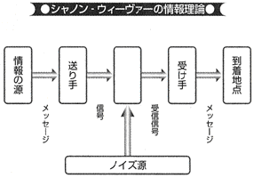

| 人を動かす！ 話す技術 (PHP新書) | |
| 杉田敏 | |
| PHP研究所 (2002) | |
人を動かす！ 話す技術
杉田 敏
はじめに
▼まず頭の中を空っぽに
コミュニケーションについて語るために、まず「茶碗」の話から始めましょう。
アメリカの大学で宗教哲学を教えている高名な教授が、禅の本質とは何かを知るために、京都の禅寺にある高僧を訪ねてきたと思ってください。教授は禅僧に会うなり、さっそく「禅の奥義とは何か」と質問を投げかけました。
迎え入れた僧は、にこにこ笑いながら、「まあ、その前にお茶でもどうぞ」と言って、ご自分でお湯を沸かし、お茶を点ててくれました。それから和尚は茶碗にお茶を注いでくれたのですが、いっぱいになってもなお、注ぐのをやめません。当然、お茶はお盆に溢れ出しています。
教授が訝りながら、「和尚、もう茶碗はいっぱいになっています」と言うと、和尚はこう答えたそうです。
「そうですね。茶碗がいっぱいなら、これ以上いくら注ごうとしても入らない。今のあなたの頭はちょうどこの茶碗と同じ状態です。もうすでにたくさんの知識が詰まっている。その頭にはもう何も入らない。禅について知りたいのなら、まず頭の中を空っぽにしてから来てください」
コミュニケーション・セミナーの冒頭によくこのようなお話をすることがあります。
人間は起きている時間の約六〇パーセントを費やしてコミュニケーションをしているといわれます。しかしほとんどの場合、コミュニケーションをしているという意識はないわけですし、効果の度合いは別にして、コミュニケーションは非常に難しいことだと感じている人もあまり多くはないでしょう。
コミュニケーションについて学びたいと考えても、知識でいっぱいの頭では吸収するものが少なくなります。ですからこの本は、できるだけ頭の中を空っぽにして、オープンマインドで読んでいただきたいと思います。
じっくり考えてみると、コミュニケーションというのは非常に奥が深く、その本質についてもよくわからないことが多いのです。コミュニケーションが成り立っているように見せかけることは意外と簡単ですが、どの程度成り立ったかはほとんどの場合、よくわかりません。
このことをイギリスの劇作家で皮肉屋のジョージ・バーナード・ショーは次のように言っています。
「コミュニケーションにおける最大の問題は、それが達成されたという幻想である」
私のかつてのボスで、世界有数の広報コンサルティング会社、バーソン・マーステラの創立者の一人ハロルド・バーソン氏は、米国パブリック・リレーションズ協会のある年の年次総会で、「コミュニケーション」のテーマでスピーチをしたのですが、それを次のように始めています。
「コミュニケーションについて話すように依頼された私の心境とかけて、亡き王からハーレムを引き継いだ若き王子ととく。そのこころは、何をしたらいいかはわかっているが、どこから始めていいかわからない」
コミュニケーションの難しさを日々実感している人たちが聴衆だったので、このジョークは受けたようです。
▼問題解決請負人の仕事
「ご職業は何ですか」
飛行機でたまたま隣に座った人から、こう聞かれることがあります。一九八七年からＮＨＫラジオで「ビジネス英語」の番組を担当してきましたが、実は、私の本職はＰＲ業です。
「ＰＲ会社に勤めています」
と答えてもなかなか理解してもらえません。
「ＣＭを作ったりするのですか。電通や博報堂のようなお仕事ですか」
とも尋ねられます。説明するのが面倒な時には、
「まあ、そんなものです」
と言ってごまかします。ある時、
「いいえ。広告以外のコミュニケーションを行う仕事です」
と言ったら、「ますますわからなくなった」と言われました。
ＰＲという仕事を説明するのもなかなか骨が折れます。あまり簡単には説明できません。私の家族でさえも、私が具体的にどのような仕事をしているのかよくわかっていないでしょう。
留学したオハイオ州立大学の大学院ではジャーナリズムを専攻したのですが、ＰＲのコースをいくつか履修し、そのおもしろさに触れました。そしてシンシナチの新聞のビジネス・レポーターから、ニューヨークに本社のあるＰＲ会社のバーソン・マーステラに入社したのは三十年ほど前です。
一昔前の一般的なＰＲ会社の主な仕事といえば、プレスリリースを書いて配信し、掲載された記事を切り貼りしてクライアントに提出するということでした。ですから、タイプライターとコピー機さえあれば誰でもＰＲ会社を始めることができるといわれていました（もちろん、現在でもそうした仕事を中心に行っているＰＲ会社もあります）。
しかし最近では、ＰＲの仕事は格段に奥行きが広くなってきました。現在私が副社長を務めている会社でも、メディア・リレーションズ以外にも危機管理から編集制作、イベント・マーケティング、消費者啓発活動まで多岐にわたる業務を行っています。
ＰＲ業は、基本的にはコミュニケーション・ビジネスです。コミュニケーションの手法を用い、クライアントの問題解決を図る。問題解決請負業、それが私たちのビジネスだと思っています。
問題のない会社はありません。どのような会社でも、多かれ少なかれ問題を抱えています。
技術力はあるのに知名度が低いために業績の伸びない会社。あるいは社員のモラールを落とさずにリストラを行う方法に苦慮している会社。社員が不祥事を起こし、顧客や他の社員に対する的確な対応が求められている会社。さらには、同業他社と合併はしたものの、企業風土の違いから社内のコミュニケーションがしっくりいかない、などというケースもあります。私たちは、そういうところに入っていって問題解決のためのいろいろな策を考え、実行するわけです。
問題解決に、絶対的に必要不可欠なのがコミュニケーション能力です。コミュニケーションをせずに問題を解決することは不可能です。
特に、企業に内在していた「問題」が何らかのきっかけで「危機」にエスカレートし、多数のマスコミ関係者が押しかけてきた時、それにうまく対処できなければ、企業の存亡にもかかわる事態にも発展しかねません。
しかしどのような場合でも、コミュニケーションを行うのは会社でも広報部でもありません。企業や組織を構成する個々の人間がコミュニケーションを行わなければなりません。各人のコミュニケーション能力が問われる正念場です。
そこで私たちの会社では各種のコミュニケーション・トレーニングを行っています。その中には外資系企業からの需要が多いプレゼンテーション・トレーニングから、工場爆発、航空機事故、労使問題、異物混入事件などを想定して、それが起きた時の対処の仕方を学ぶクライシス・トレーニングまで多岐にわたるトレーニングが含まれます。
▼スポーツ選手も受けるメディア・トレーニング
こうした各種トレーニングを年間約一〇〇件実施していますが、最近、脚光を浴びているのがメディア・トレーニングあるいはスポークスパーソン・トレーニングと呼ばれるものです。
簡単に言ってしまえば、マスコミとの効果的なインタビューや記者会見を行うための研修です。企業のトップ経営者のほか、広報担当役員や政治家、マスコミの取材の対象となる方々のためのもので、模擬インタビューや会見の様子をビデオに撮り、それをプレイバックしながらコンサルテーションを行います。
「イメージ・メーカー」と呼ばれる人たちによるメディア・トレーニングなるものがあることは、三十年以上前にオハイオ州立大学のＰＲのクラスでも紹介されましたが、当時はまだそれがビジネスとして成り立つと考えた人はあまりいなかったようです。
現在、欧米などではメディア・トレーニングは政治家や経営者だけでなく、スポーツ選手や医師、ビューティ・クイーン、宇宙飛行士などの必須科目となっていて、年間一〇〇件以上のメディア・トレーニングを行う専門会社およびＰＲ会社が数多く存在します。
メディア・トレーナーとして活躍しているアメリカ人の友人の話によると、最近、こうしたトレーニングを受けるトレーニーの中心は、いわゆる「ドットコマー」と呼ばれる、インターネット関連企業のオーナー経営者だそうです。二十代、三十代で若くして急成長企業のトップになり、株式上場も果たしたものの、マスコミとのインタビューやアナリスト・ミーティングなどの経験がなく、不安なためです。
また医療過誤をめぐる訴訟などが多発していることから、病院や医師なども定期的にメディア・トレーニングを行っているところが増えてきているそうです。
『朝日新聞』に「ミスコンにかける」という記事が載っていました（二〇〇二年六月六日付）。ミス・ユニバース世界大会にコロンビアから出場した同国初の黒人代表が、ほとんど費用をかけずにミスに選ばれたことを報じたかなり大きな記事です。通常は、一人のミスを誕生させるためには四〇〇〇万円から一億円はかかるそうです。費用としてあげられている中に、「記者会見での質疑応答教育係の人件費」とありました。これがメディア・トレーニングのことです。
▼ニクソンはなぜ負けたか
メディア・トレーニングの重要性が指摘され始めたのは、一九六〇年頃からです。その契機となったのが、有名なケネディとニクソンのディベートです。大統領の座を争っていた二人は、ディベートを行い、この模様はテレビとラジオを通じて全米に中継されました。
この時、ラジオを聞いていた人はニクソンに分があると思い、テレビを見ていた人はケネディが優勢だと感じました。というのは、ニクソンは外交経験や議論そのものではケネディより多少優れていたものの、「午後五時の影」（five-o'clock shadow）と呼ばれる濃い髭が災いして、視聴者に病後の患者あるいは陰険な悪党のような印象を与えてしまったのです。
そして選挙の結果は、周知のとおり、ケネディの僅差の勝利でした。これによって、広く一般に、メディア・トレーニングというものに対する認識が持たれるようになったといわれます。
今日のアメリカでは、さまざまな分野の人が当然のようにメディア・トレーニングを受けています。ＮＡＳＡ（米航空宇宙局）の宇宙飛行士も例外ではありません。地球に戻った彼らの重要な任務のひとつは、いわば広告塔として、ＮＡＳＡのプログラムがいかにすばらしいかをあちこちで宣伝して回ることです。
向井万起男著の『君について行こう』（講談社）にも、打ち上げ前に宇宙飛行士たちがメディア・トレーニングを受ける様子が書かれています。
こうしたトレーニングに力をいれているのは欧米だけではありません。たとえば香港の董建華行政長官は、一九九七年の就任直後に、アメリカに渡ってメディア・トレーニングを受けています。
私たちの会社も一九九七年に中国にオフィスを設けてからは、北京、上海、大連など中国各地や、香港、台湾でも日本語・英語・中国語のメディア・トレーニングを行っています。中国の国営企業のトップも、非常に熱心です。
欧米にしろ、中国にしろ、なぜそれほど熱心なのか。それは、きちんと話せなければ損をするからです。きちんと話せない、きちんとコミュニケーションが取れないということは、メッセージが相手に伝わらないということです。だとすれば、相手にアクションを取ってもらうこともできません。会社のイメージを上げることも、モノを買ってもらうこともできないわけです。
広告だけではモノは売れない世の中になってきています。いろいろなコミュニケーションの手法を組み合わせて消費者に訴えていかなければ、企業は生き残っていけません。
▼いいモノでも黙っていては売れない
中国・瀋陽に東軟集団というソフトウェアの開発会社があります。私たちのクライアントなのですが、日本で本格的なＰＲ活動を展開する初めての大手中国企業です。きわめてユニークで先見性のある会社で、日本企業ともいくつかの合弁会社を設立しています。
そのトップである劉積仁総裁は、こんなことを言っています。
「私たちはＰＲの力を知っています。ＰＲをすると、結果がまったく違うことを実感しているからです。特にソフトウェアの場合は、使ってみるまでは中身がよくわかりません。ですから、そのソフトが人間の生活をどのように豊かにしてくれるのか、きちんと訴求しなければならないのです。
その点、日本企業はＰＲが下手ですね。非常に優秀なモノをつくる技術はあるのに、その製品がいかに便利で、どのように生活を楽しくしてくれるのかといったことを、アピールできていません。このままだと、やがて中国の企業がＰＲの面で日本を追い越すかもしれませんよ」
劉総裁は「中国のビル・ゲイツ」と呼ばれる人物で（ご本人は学者肌で、そう呼ばれるのをあまり好まないそうですが）、もちろんメディア・トレーニングも受けています。その人の言葉だけに、きわめて説得力があります。
いいモノさえつくっていれば、黙っていても売れる。これが、従来の日本的な発想でした。実際、そういう時代もあったでしょう。しかし今や、中国でもいいモノを安くつくれるようになってきています。
だとすれば、重要になるのは自社製品と他社製品の違いを強調することです。どういう点にメリットがあるのか、それを使うことによって生活がどう変わるのかといったメッセージを出さなければ、その製品は製品群の中に埋もれてしまうだけです。
このことは、社内のコミュニケーションについてもいえます。ひとつの会社の中で、一生懸命に働いている人はたくさんいます。しかしその中で、取締役にまでなれる人は一握りです。出世しなくてもいい、という人もいるかもしれませんが、やはり次のステージに行きたいと思っているのであれば、実力を周囲に認めてもらわなければなりません。それには、自らをもっとアピールすることを覚えなければならないはずです。
▼理論武装も必要
私は一九七〇年代中頃にニューヨークで本格的なメディア・トレーニングのトレーナーを育成するプログラム（train-the-trainer program）を受講し、それを日本に導入しました。
それから今日まで、数多くの日本の大手企業のトップ経営者のためにトレーニングを行ってきました。在日外資系企業の外国人のトップのために英語でトレーニングをすることもよくあります。
米国式のメディア・トレーニングは非常に実践的で、特に突撃型のテレビ・レポーターにどのように対応するかという点に主眼が置かれていることが多いようです。
日本で最初に何件かのメディア・トレーニングを行って気づいたことは、日本の経営者は実践編だけではあまり満足しないということです。企業のトップにまで昇りつめた経営者はかなりの切れ者が多いわけで、その人たちはある程度の理論の裏付けがないとあまり価値を認めてくれません。それに日本では、新聞や経済誌の単独インタビューあるいは工場事故などの緊急時における記者会見の模擬訓練をしたいという要望の方が多いのです。
他社の行っているメディア・トレーニングなどでは、アナウンサー経験が多少ある人を連れてきて、単に「話し方教室」の延長でやったりしているものもあるようですが、それではあまり高い顧客満足度を得られません。
そこで私のやっているメディア・トレーニングでは、まずコミュニケーションとは何か、なぜ誤解は生じるのかといった「コミュニケーション概論」から入り、理論武装をしてから、「マスコミ」の特質を理解してもらい、記者対応におけるいくつかの「勘所」を説明します。
模擬インタビューや会見で記者役をするのは主に私たちの会社の社員ですが、場合によっては現職の記者に参加してもらい、会見でのやりとりに基づいた「記事」を書いてもらったりもします。プロのスタイリストと一緒にご自宅におうかがいしてワードローブを見せていただき、ネクタイや服装などについて助言をすることもあります。
いずれの場合も、参加企業から十分なブリーフィングをしていただき、その企業の特性に合ったシナリオを作り、それに基づいたプログラムを組みます。
こうしたトレーニングを積極的にご自分から受けたいと考える経営者の多くは、主に欧米でのビジネス経験があり、メディア・トレーニングの実態についてある程度ご存知の方です。一方、下の人たちが、是非、自分たちのリーダーにトレーニングを受けてほしいと思っても、最終的にご本人が「嫌だ」とか「必要ない」と言って断ってしまうケースもよくあります。
▼自己表現力は「なければ損」する
ソルトレーク冬季五輪中に『朝日新聞』の夕刊一面に、「日本勢、会見も苦戦」という見出しで次のような記事が載っていました。
「ソルトレーク冬季五輪で不振が続く日本選手陣が、記者会見にも苦戦している。会見場で、抱負や感想を聞かれても『特にありません』式のとらえどころのない答えが多く、口調もよどみがち。自己表現にたけた欧米勢との差は歴然だ。その違いはどこから来るのか」（二〇〇二年二月十八日付）
日本選手が期待ほどには活躍しなかったこの大会では、競技後のインタビューでも欧米の選手に比べて見劣りがした、といった内容です。前段の最後は「どこから来るのか」と疑問形で終わっていますが、私に言わせれば、これは当然のことです。
前述したとおり、欧米のスポーツ選手の多くはインタビューのための訓練を受けていますし、こういう場で自分をアピールしなければならないことをよく理解しています。第一、マスコミを通じて好印象を残すことができれば、ＣＭなどに出た場合の契約金が違ってくるのです。
日本の場合、取り組み後の力士のインタビューをはじめとする、ヒーローインタビューなどを聞いていても、アピールの仕方が上手な人はほとんどいません。しかし欧米では、自己表現力は「あればいい」といった程度のものではなく、「なければ損」という認識が強いといえます。
本著では、こうしたコミュニケーション能力をどのようにして身につけるか、そしてコミュニケーションの最終目的である「人をどう動かすか」ということに焦点を絞って考えてみたいと思います。
はじめにのまとめ
◇オープンマインドがなければ情報は吸収できない
◇「コミュニケーションにおける最大の問題は、それが達成されたという幻想」
◇ＰＲ業は、クライアントの問題解決を図る問題解決請負業
◇問題解決に、絶対的に必要不可欠なのがコミュニケーション能力
◇最近、脚光を浴びているのはメディア・トレーニング
◇メディア・トレーニングは政治家や経営者だけでなく、スポーツ選手や医師、ビューティ・クイーン、宇宙飛行士などの必須科目
◇コミュニケーションが取れなければ、相手にアクションを取ってもらうことはできない
◇いろいろなコミュニケーションの手法を組み合わせて消費者に訴えていかなければ、企業は生き残っていけない
◇コミュニケーション論を学び理論武装をする
◇本著のねらいは、コミュニケーション能力をいかにつけるか、人をどう動かすか、にある
第１章 この世はすべてプレゼンテーション
１ 相手にアクションを起こさせる
▼プレゼンテーション力で勝負
シェークスピアの戯曲『お気に召すまま』の中に、「この世はすべてこれひとつの舞台」（All the world's a stage.）という有名なセリフがあります。これをもじって言えば、「この世はすべてプレゼンテーション」ではないでしょうか。
現代では、ビジネスパーソンが、内部・外部の人に対してプレゼンテーションを行う機会がますます増えているにもかかわらず、その技法・技術は「自己流」の域を出ないことが多いようです。きわめて重要な技術であるにもかかわらず、日本ではコミュニケーション技術の研究がなおざりにされてきたのが実情でしょう。
それが欧米ですと、小学校で「ショー・アンド・テル」の時間があります。それは、クラスに子供たちが自宅から「お宝」の一品などを持ってきて、それを見せながら（show）話をする（tell）というものです。ペットの動物や家の屋根裏に置いてあった骨董品、あるいは親や祖父母の形見などを見せます。
いわばこれはプレゼンテーション研修の初歩です。中学、高校でもスピーチやディベートの授業があって、「話し方」についての教育では欧米の方がはるかに進んでいるといえるでしょう。
社会人になっても、全米的な組織としてトーストマスターズ・クラブ（一九二四年に設立された、効果的なパブリック・スピーキングの技術を身につけたい人たちのための非営利団体）があって、スピーチやプレゼンテーションの技能を磨く機会があります。アメリカでは各都市にいくつもの組織が存在しますが、世界では五〇カ国以上に八〇〇〇のクラブがあるそうです。日本でも一九九一年以来、約四〇のクラブが活動しています。
第一印象は面接の最初の三分間で決まり、その印象から能力や人柄の半分程度は類推できるという調査結果を、東京ガス都市生活研究所が数年前に発表しています。不況で転職や再就職を目指す人が増えている現在、採用が主に「見かけ」で決まるとすれば、ただ「中身で勝負」とばかりはいっていられません。
私たちのようなＰＲや広告関連の会社は、たとえいい企画案を作成してもプレゼンテーションが下手では、仕事を取ってくることができません。
『広辞苑』第五版には「プレゼンテーション」の定義として、「掲示、発表。特に広告会社が広告主に対して行う宣伝計画の提案。プレゼン」とありますが、これはあまりにも時代遅れの定義ではないでしょうか。昨今、プレゼンテーションを行うのは、広告会社だけではありません。
外資系企業などではプレゼンテーション能力がなければ、まず社内で認めてもらえないでしょう。商社や○○総合研究所といった組織も一般的にその存在理由が薄れつつあって、いずれも差別化を図るのに苦労しています。企業グループの「のれん」だけでは売れない世の中になっていますから、こうした企業の中にも社員のプレゼンテーション研修に力をいれているところがあります。
▼騙されない方法を同時に学ぶ
社会人になれば、ありとあらゆる場面で人と話をする機会があるのですが、プレゼンテーション研修を受ける社員の中には「いやいやながら」という方も少なくありません。特に、外部の人と接触の少ない総務や経理などで働く方にとっては、「人前で話すこともないし、プレゼンテーション研修など役に立たない」というわけです。なかには、研修の日に毎年病欠の電話を入れて、三年後に仕方なく、やっと私のトレーニングを受けたという方もいました。
しかし、プレゼンテーションとは大勢の人の前で話すことだけではありません。一対一の場合でも、相手の何らかのアクションを期待して話をする、説得をするということであれば、それは立派にプレゼンテーションです。だとすれば、プレゼンテーションの能力が不要な人というのはあり得ないでしょう。むしろ、これからの世の中ではさらに重要になってくると思います。
ところが、概して日本人はプレゼンテーションが下手です。海外で日本の政治家や企業人がスピーチをする際にも、いかにも誰か他人に書いてもらった原稿を、カタカナ英語でつっかえながら読んでいたりします。その姿は本当に痛々しく、そばに寄って「代わりに読んで差し上げましょうか」といいたくなるほどです。
では、なぜ下手なのでしょうか。最大の理由は練習不足です。というか、ほとんど練習をせずにその場に臨むことが多いようです。日本では、練習の時間をムダと考える風潮があるようです。特に社会的地位が上がれば上がるほど、その傾向が強くなります。
ある大企業の新任社長のトレーニングをした時のことです。社員向けに社長就任のスピーチをしたビデオがあるというので、まずそれを見せてもらいました。
見るからに緊張していて、前に組んだ手をたえず動かしたり、動作に落ち着きがなく、話し方も典型的な「訥弁」です。
デスクに座って、手を手前で組むと、画面では手が異常に大きく映ります。その手がいつも動いていると、見ている方にとっては気が散りますし、緊張していることが明白です。
こういう場合には、カメラをもう少しアップにして手が入らないようにし、カメラ・リハーサルを二、三度すれば効果はずっと違ってきます。
こう申し上げると、新社長は、「あなたと同じことを息子に言われたよ。でも社員は誰も何も言ってくれない。スタジオに入ったら、すぐに『ぶっつけ本番』だったから」と不満顔です。同席した広報部長は、下を向いたままでした。
しかし、上手なプレゼンテーションをしようと思ったら、リハーサルを省略することはあり得ません。次回はよりよいプレゼンテーションをしようと思ったら、終わった後に出来栄えを周りに尋ねるのは当たり前です。
ですから逆にいえば、上手なプレゼンテーションをされると、たとえ中身が薄くてもすぐに騙されることになります。したがって、プレゼンテーションの能力、コミュニケーション力、説得力を身につけるということは、同時に騙されない方法を学ぶということでもあるわけです。
▼Ｂ級役者の名スピーカー
実は私は、小学校高学年から中学を卒業するまで、ＮＨＫ東京放送児童劇団二期生としてラジオのドラマや学校放送などに出ていました。テレビがまだ普及する前のことですが、教室で自分の出演している教育番組などを聞くのはちょっとこそばゆく、と同時に優越感に浸る時間でもありました。
劇団で演技の基本を習ったわけですが、これが今日、プレゼンテーションを行う上で非常に役に立っていると思います。
ただし、お芝居とプレゼンテーションには根本的な違いがあります。演技力があるからといって、上手なプレゼンテーションができるわけではありませんし、その逆も真ならずです。
アメリカのロナルド・レーガン元大統領がかつて役者だったことはよく知られていますが、「ザ・グレート・コミュニケーター」と称されるほど、コミュニケーションの名手でした。しかし彼は役者としては大成していません。はっきり言って、Ｂ級の役者でした。それでも役者として培った経験が後の強みになったことは間違いないでしょう。
私の場合も、小学生の時にはニヒルなコメディアンになりたいと考えていたのですが、才能がないことを悟って夢は捨てました。しかし児童劇団では、正しい発声や朗読の仕方といった基本的なことに加えて、二つの重要なことを学んだと思います。
ひとつは、どのような時にもユーモアのセンスを忘れず、気負いを捨てること、つまり自分自身を素直に出すということです。自分はこういう人間だということを素直に出し、等身大の自分を知ってもらえば、コミュニケーションは意外と容易になります。
もうひとつは、役作りに必要な「その人の身になって物事を考える」ということです。これは後で説明をする「聴衆の分析」（audience analysis）に役立ちます。相手がどういう態度・姿勢で自分の話を聞いているのかを分析することは、非常に大事です。
プレゼンテーションは演技やパフォーマンスではありません。辻元清美衆院議員の辞職を報じたマスコミの記事にいくつか「パフォーマンス」という言葉が使われています。
「辻元議員が辞職、疑惑晴れず迷走の末――威勢の良さ影潜め 議員バッジ自ら外し、最後もパフォーマンス」（『日本経済新聞』二〇〇二年三月二十七日付）
「辻元氏議員辞職 得意のパフォーマンス 汚れたイメージ、マイナスに働く」（『産経新聞』同日付）
プレゼンテーションとは「インフォーム」する（知らせる）ことで、「パフォーム」する（演ずる）ことではないといわれます。辻元氏のように、いかにも「芝居がかった仕草」と思われてしまうと、それがコミュニケーションを阻害する「ノイズ」となってしまい、かえって本意が伝わらなくなります。
プレゼンテーションはレクチャー（講義）とも違います。大学などの講義は、先生が一方的に話すスタイルが一般的です。学生が理解しようがしまいが、十年一日のごとく同じノートを使っている教授も少なくありません。学生たちの間では、「○○先生のノートをのぞいたら、『ここで学生を笑わせる』と書いてあった」といったジョークも聞かれます。
聴衆の反応を考慮に入れないものはプレゼンテーションといえません。それがプレゼンテーションの最も重要な要素のひとつだからです。
▼相手のニーズを把握し、いかに動かすか
プレゼンテーションにはさまざまな種類があります。私たちがクライアントや潜在的なクライアントに対して行っている新規獲得・更新の際の企画案の提示もそのひとつです。売り込みのためのプレゼンテーション、社内で部下が上司に対して行う予算案や業績などのプレゼンテーション、あるいは調査結果の発表のためのプレゼンテーションもあるでしょう。
いずれにしても、それらの共通項は「目的」があるということです。たとえば売り込みのプレゼンテーションであれば、製品やサービスの説明をします。目的は、買ってもらうこと、契約書にサインをしてもらうことです。その目的が達成されなければ、プレゼンテーションは失敗といわざるを得ません。
もちろん契約を得ることが目的ではない場合もあります。相手に好意を持ってもらいたい、自分たちの力量を知ってほしい、計画を受け入れてほしいなどといった目的もあるでしょう。
しかしいずれの場合も、目的が達成されずに、相手がこちらの期待しているアクションを起こしてくれなかった場合には、プレゼンテーションが失敗したことになります。失敗だったと自分自身にいい聞かせなければならないのです。それはバーの高い定義です。でも言い訳はききません。
ＧＥの元会長のジャック・ウェルチ氏は自著『我が経営』の中で、タイの「自動車ローン」プロジェクトについて、最初はごみ箱行きだと思って冷やかしていたのが、担当者の熱弁を聞いてその案を承認することになったいきさつに触れ、「人の心は優れたプレゼンテーションと情熱によって変えられるものだ」と述べています。
またプレゼンテーションを成功させるためには、相手のニーズをきちんと把握するということも大切です。
デルコンピュータ会長のマイケル・デル氏が来日した折に、社内プレゼンテーションを見て激怒したという伝説が残っています。
一般的にコンピュータが得意な人は、パワーポイントによるプレゼンテーションを組み立てる際に、つい凝りすぎる傾向があります。巧妙なコンピュータ・グラフィックスや画像をはめ込んだり、アニメーションを駆使したりと、きわめて複雑なものをつくりたがる傾向にあります。
そうしたプレゼンテーションを見たマイケル・デルは、その社員に「これを作るのに何時間かかったのだ！ こんなことをする暇があったら......」と怒ったというのです。
最近、社団法人経済広報センターの中国広報ミッションに同行して、北京・上海で主に欧米企業を訪れ、それぞれの広報体制や課題についてのプレゼンテーションを受ける機会がありました。いつもはプレゼンテーションをする立場なのですが、久しぶりに他社のものをじっくり見ることができました。
やはり優秀なプレゼンテーションとは、聞き手のニーズや知りたいポイントに適切に応えてくれるものだということを再認識しました。こちらにはあまり興味のない点について表やグラフを使って詳細に説明したり、質問に対する答えが見当違いなものだったりしたのでは、共感を得ることはできません。
２ 自己主張のすすめ
▼自己紹介はプレゼンの第一歩
企業単位のプレゼンテーション研修を行う際の定番は「自己紹介」です。三分間の自己紹介をきちんとできるということはプレゼンテーションの第一歩です。トーストマスターズ・クラブのプログラムにも必ず入っています。
一人ずつ前に出てきてもらって、自己紹介をしてもらいます。私は三分すると音の出るストップウォッチを持って時間を計りながら、話し方や姿勢などをチェックします。
二〇人足らずの小さなグループで、しかも同じ会社の同僚であっても、人の前に立って話をするとなると誰でも多少緊張します。声が高くなったり、語尾がかすれたり、視線が定まらなかったり、始終身体を動かしたり、あるいはガタガタ震える人もいます。
話し方については、「え～」とか「あ～」あるいは「結構」「だから」といった耳障りなつなぎの言葉を連発する人にも注意をします。また最近、三十代くらいの女性に多い、語尾を「だからぁ～」「それでぇ～」のようにやたらに伸ばしたり上げたりする癖のある人が多いのも気になります。
女性だけでなく、四十代から六十代の企業のトップあるいは中堅クラスの男性でも、若い人から移ってしまったのか、こういう話し方をする人たちがいます。同じような現象は英語にも見られ、アップトークと呼ばれますが、やはり若い人たちの間で始まった話し方のようです。
十代や二十代の女性なら、まだ「かわいらしい」で許してもらえるかもしれませんが、三十代以降でこういう話し方をしていると、精神構造が幼いと思われたり、プロとして見てもらえません。ほとんどの人が社会人になってから話し方について人から注意を受けた経験があまりないようで、とまどっても素直に聞いてくれます。しかし中には批判されることが嫌いな人たちもいます。
以前、ある外資系企業に勤めていた時に、一人、非常に怖い外国人の上司がいました。いつもしかめ面をしていて、怒ると大きな声を上げ恐ろしい形相になるので、誰もが何となく避けるような形になっていました。
ある朝、その人に会うと、喉のところからティッシュがコヨリのようになってぶら下がっているのです。髭を剃っている時に切ってしまった後に血止めをしたのでしょうが、あまり格好よくありません。言ってあげた方がいいかなと思ったのですが、ちょっと言い出しにくい雰囲気でした。
それでも意を決して、冗談っぽい明るい口調で、「今朝、自殺でもしようと思ったのですか」と呼びかけてみました。するとやはりWhy?と詰問調の大声が返ってきました。まずかったかなと思ったのですが、「喉のところに変なものがついているので」と言うと、態度ががらっと変わって、「ありがとう」と感謝されました。
「今朝からこんなみっともないものを下げて歩いていたのか。私のことを思って注意してくれたのは、君だけだ。本当にありがとう。でも今朝、君の前に三人の社員と言葉を交わしたのに、誰も指摘してくれなかった」
そう言うなり、この人はその三人のところに順番に行き、「なぜ注意をしてくれなかったのだ！」と大声で怒鳴っているのが聞こえました。
研修の中では、できるだけ相手のことを考えて、失礼にならないように正直なコメントをいつも言うようにしています。正直に自分の気持を相手に伝えることをいつも心がけていれば、周囲に誤解を与えることも少なくなり、コミュニケーションの効果も上がってくるはずです。
▼「実は私は......」で問われる自己ＰＲ力
ちょっと話が脇道にそれてしまいましたが、自己紹介はプレゼンテーションの基本とはわかっていても、同期に入社した同僚もいる前で、「今さら自己紹介なんて」という思いがあるはずです。そこで自己紹介は「実は私は......」で始めるというルールにしました。つまり、長年一緒に働いてきた気心の知れた間柄であっても、その人たちも知らないような側面の話をすることを条件にしたのです。
実は私は......で始めて、どんな話をするか。「会社を辞めようと思っている」「かつて刑務所暮らしをしたことがある」「子供がドラッグにはまって困っている」といった話は「隠れた側面」かもしれませんが、その後の社内での人間関係を考えればあまりにリスクが大きすぎます。かといって誰もが知っているような話を披露したのでは、「つまらない人間」と思われてしまうかもしれません。
ここで問われるのが、自己ＰＲ力です。自分という人間は他とは違う、大きなマシンの中のひとつの歯車ではないことを示すためにも、何を話せばいいか。この決断を下せるのは、自分自身以外にはありません。
かつて上智大学で「企業広報論」というクラスを教えていたことがあります。ＰＲの基礎的理論とその応用を学んでもらう授業ですが、企業を効果的にＰＲするためには、自己ＰＲもできなければなりません。そこで自分の特技やナンバーワンと誇れるものを書く宿題をいつも出していました。
学生からはいろいろおもしろいテーマのレポートが出ました。「アジのたたきを作らせたら右に出るものはいない」「広島風お好み焼きを焼かせたらナンバーワンである」「日本の野鳥の名前をすべて知っていて、たいていの野鳥は声だけで識別できる」「動物と話ができる」「ギターには自信があり、その場ですぐ曲を作ることができる」「インスタント生ラーメンに手を加えて料理させたら日本一」などなど。
このように「絶対他人には負けない」という特技や特徴を持つというのは、自分の人生に自信を持つ上でも大切ですし、それをうまく生かして人生のより大きな目標を達成するための道具としても使えるかもしれません。
▼違いをいかにアピールするか
いずれにしても、ここで重要なのは、いかに聞き手に強い印象を残せるかということです。特に私たちのようなビジネスの場合、景気の悪さを反映して、クライアントは、限られた予算内で最大の成果を上げたいという意識が強くなっています。そのため、一日で四、五社、二日がかりで九社前後のコンペを行うところもあります。
しかしクライアントにとってみれば、連続で九社のプレゼンテーションを見せられても、結局どの会社がどのような提案をしたのか、とても覚えきれません。実際私も、寝ているクライアントの前でプレゼンテーションを行ったことが何回かあります。あるいはその日最後の順番になって、クライアントも疲れていて「どうでもいい」「早く終わってほしい」という雰囲気を感じることもありました。
こうした制約がある中で、いかに他社との違いをアピールできるかが勝負となります。
ある時、四十五分以内に終わらせるという条件でコンペに参加したことがありました。プレゼンテーションを行う側にとって、これはきわめて短時間です。しかも双方五名程度が最初に名刺を交換すると、それだけで五分前後かかってしまいます。正味四十分で自分たちの企画を説明するのはかなり困難でした。
そこで私は、あらかじめ自分たちの名刺に顔写真を貼り、それらをまとめて相手の人数分だけ透明な名刺入れに入れ、プレゼンテーションの冒頭に先方に配ることにしました。その上で、先方の名刺は後でもらう。これなら時間はかかりませんから、すぐにプレゼンテーションに入れます。
「こんな工夫をする会社は他にない」と、先方にも好評でした。つまり、「この会社は他社とは違う」という印象を与えることができたわけです。
プレゼンテーションが終わった後でも、やるべきことはあります。手紙やメールを出すのは当然ですが、場合によっては相手が興味を持っていそうな新聞や雑誌の記事や本を送ったりすることもよくします。すべて、自分たちは他とは違うということを知ってもらうための方策です。
▼「ナンバーワン」になり差別化を図る
これを「差別化」ともいいます。他との差別化を図る一番いい方法は「ナンバーワン」になることです。
マーケティングのバイブルともいうべきPositioning: The Battle for Your Mindという本の中で共著者のアル・リースとジャック・トラウトは、次のような問いを発しています。
「月面を最初に歩いた宇宙飛行士は誰ですか？
もちろん、ニール・アームストロングですね。
では、二番目に歩いたのは？
世界で一番高い山は、どこですか？
ヒマラヤにあるエベレスト山ですね
では、二番目に高い山はどこ？」
「一番目」は誰でも知っていても、二番目、三番目は印象に残らない。つまりナンバーワンになることが、人に覚えてもらう最善の方法だというのです。月面に降り立った二人目の宇宙飛行士の名前が思い出せないどころか、若い人たちの中にはアポロ宇宙船が月に向かったのは一回だけだと信じている人も少なからずいます。
今から十年ほど前の大晦日に、西武百貨店が「商品の包み方の一番上手な百貨店になります」という見出しとマンガ風のイラストの入った一面広告を各紙に出したことがあります。これなどは非常にいい差別化の例です。
「けっして評判がいいとは言えない西武百貨店が、ちゃんとするために、何をしたらいいのか」で始まる広告コピーもあります。「いろいろ無い知恵を絞ってみたのですが、まず、基本的なサービスをキチッとできる百貨店になろうということになりました」と続いています。
その結果、「商品の包装なら西武が一番」と言われるようになりたいという結論に達したというのです。
最後のところは、「だから、まずひとつだけ、約束させてください。四月の新学期までに、みんなが練習して、商品の包み方の一番上手な百貨店になります」と結ばれています。
非常に明確なポジショニングです。それがきちんと実行できれば、他の百貨店との差別化のひとつの大きな要素になります。
企業は現代の競争に打ち勝つためには、よりよい製品とよりよいサービスをより競争力のある価格で顧客に提供しなければなりません。プレゼンテーションも同じです。特に、競合プレゼンに勝ち抜くためには、自らの独自性をアピールすることが最重要になってきます。
第１章のまとめ
◇第一印象は最初の三分間で決まり、その印象から能力や人柄の半分程度は類推できる
◇プレゼンテーションとは大勢の人の前で話すことだけではない。一対一の場合でも、相手の何らかのアクションを期待して話をする、説得をするということであれば、それは立派にプレゼンテーションである
◇日本人のプレゼンテーション下手の最大の理由は練習不足
◇等身大の自分を知ってもらえば、コミュニケーションは意外と容易になる
◇プレゼンテーションとは「インフォーム」することで、「パフォーム」することではない
◇目的が達成されずに、相手がこちらの期待しているアクションを起こしてくれなかった場合には、プレゼンテーションが失敗したことになる
◇プレゼンテーションを成功させるためには、相手のニーズをきちんと把握する
◇「実は私は......」の自己紹介で自己ＰＲをしてみる
◇他との差別化を図る一番いい方法は「ナンバーワン」になること
第２章 コミュニケーションの達人になる！
１ 何のためのコミュニケーションか
▼メッセージと意味を伝える
「コミュニケーションとは何ですか」
コミュニケーション・セミナーやメディア・トレーニングなどで、私はよく参加された方にこう質問をしてみます。
コミュニケーションは日常生活とあまりにも密接しているがために、たいていの人はその意味を考えることは普段あまりないように思えます。
「意思の疎通を図ること」
「お互いに考えていることを伝えあうこと」
「意思を伝達すること」
「情報のやりとり、共有化」
といった答えが返ってきます。
そもそも日本語には、「コミュニケーション」に相当する言い訳語がありません。実際、日本には、コミュニケーションの基本について教えてくれる大学のコースや教育プログラムなどもあまりありません。
『大辞林』第二版を引くと、「人間が互いに意思・感情・思考を伝達し合うこと」という定義が載っています。
基本的に、コミュニケーションとは「メッセージと意味を伝える」ことです。その「メッセージ」と「意味」は、違う場合もあります。「顔で笑って心で泣いて」などのように、顔が発信している表向きのメッセージと、その裏に隠されているメッセージとは違うこともあるわけです。
現代の若者は、I love you. の意味で、ほとんど英語の直訳と思える「私はあなたを愛しています」などという文句を平気で口にするようです。しかし、少なくとも私の世代までは、とても恥ずかしくてこのような言葉を言えませんでした。
では、私よりも上の世代の人は、同じ意味をどのようなメッセージで伝えたか。我が師で元参議院議員の國弘正雄氏によれば、「今夜の月はきれいだね」と言ったのだそうです。
もちろん現代の若者にこう伝えても、同じ意味には解釈してもらえないでしょう。
文章論に関する数々の著書で有名な、オーストリア生まれのアメリカの学者のルドルフ・フレッシュ博士は、「二人の人間にまったく同じ意味に解される語はない」と述べています。
こんな経験をしたことがあります。ある日、ニューヨークの街を歩いていると、ある一角にNAILSと大書したサインがあちこちにありました。このあたりは金物屋さんが多いのかな、などと思いながらそのうちの一軒をのぞき込んでみると、「釘」など売っていそうにない、まるで美容院のような内装です。
そこではっと気がつき、思わず苦笑してしまいました。NAILSといっても「釘」や「鋲」のことではなく、「つめ」の意味だったのです。ネールアーチストあるいはネーリストと呼ばれる人たちが手や足のつめにマニキュアを塗ったりしてくれるお店でした。
NAILSという語を見て、どちらの意味を最初に思い浮かべるかは、性別や職業、年代などによっても違うでしょう。
「意味」は辞書の中にあるのではけっしてありません。その言葉を使う人とそれを受け取る人の頭の中に存在します。
▼問題解決のイメージアップの手段
コミュニケーションはまた人間関係やイメージを作ったり、改善したりする際にも絶対に必要です。会社の同僚が気に食わないからといって、口をきかないでいれば、関係は永遠によくなりません。
森喜朗氏が総理大臣の任期中、毎日の新聞に載る総理官邸付きの記者とのやりとりに、終わりの頃には「......」が目立ちました。記者が質問をしたり話しかけても総理が無視をしたり、答えなかったりしたことが多かったのです。
もう森総理のイメージはこれ以上落ちないだろうから、何とかイメージアップの策はないものかと派閥の代議士に相談を受け、いくつか提案をしたこともあります。しかし周りの人たちが外見をどのように繕っても、実体が変化せずに、ご本人がまったくコミュニケーションをする意思がないのであれば、人間関係をよくすることは不可能です。
問題解決もコミュニケーションなしに成し遂げることは絶対に不可能です。
コミュニケーションのもうひとつの役割は、共通の価値観を作るということです。もともとcommunicationという言葉は、「共通」を表すcommonと同じ語源で、「他と分かち合うこと」を意味します。
同じ言語や民族、習慣、経験、教育、生活空間など、お互いに共通点が多ければ多いほどコミュニケーションは基本的に容易になります。Ｍ＆Ａの結果としてできた数社の企業風土が共存する寄り合い所帯的な企業、あるいは急成長して中途採用者の多い企業では、通常、コミュニケーションは難しいのです。
最近、企業の中には「変革」や「スピード」といったことを経営のテーマとして掲げているところが少なくありません。新しい価値観やパラダイムの下で企業を変えていこうとする時には、コミュニケーションが不可欠なのは当然です。
▼相手にアクションを取らせる
しかし現実の世界におけるコミュニケーションの定義は、さらに厳しくなります。
これまでに数多くのメディア・トレーニングを実施してきて、トップ経営者に、「コミュニケーションとは何ですか」という質問を発してきました。その中で私が期待していたような答えをくださった日本人は三人しかいません。うちお二人は、現在は海外に駐在しています。一人はアメリカである大手企業のＣＥＯとして、もう一人は中国事業のトップ責任者として。残りの一人は日本を代表するある大企業の社長です。
表現する言葉は多少違いますが、この方々は次のようにおっしゃいました。
「コミュニケーションとはこちらの思うことを相手に伝え、相手にアクションを取ってもらうことです」
「人を動かして、何かをしてもらうこと。経営と本質的には同じです」
「相手にこちらのことを理解してもらい、最終的には私どもの製品を買っていただくことです」
そうです。コミュニケーションの最終目的は「相手にアクションを取ってもらう」ということです。こちらのメッセージや意味を相手に伝えるだけでは不十分なのです。
たとえば、あなたが営業に出てお客さんのところに行ったとします。会社や製品の説明をして、こちらの言い分は十分に理解してもらい、相手は納得し、お互いの意思疎通はできた。しかし、「よくわかりました。でも私はあなたの会社の製品ではなく、Ｘ社の製品を買うことにします」と相手が言ったら、コミュニケーションは成り立たなかったと考えなければいけないということです。
たしかに、場合によっては、相手が買ってくれなかったのはコミュニケーションの内容よりも他に理由があったのかもしれません。
もともと先方に買う意思がなかったのかもしれません。あるいはこちらの提示したモノが高すぎたり、安すぎたりした場合、あるいはこちらの態度が悪かったり、製品の持つ機能が十分でなかったといったことも考えられます。
しかしひとたび、相手とコミュニケーションをしようと考え、結果として相手がこちらの期待するようなアクションを取ってくれなかった場合には、コミュニケーションは失敗したと考えなければいけないということです。これはバーの高い定義ですが、これが現実の定義です。
ここでいうコミュニケーションはプレゼンテーションとほぼ同意語です。コミュニケーションには「話す」以外に、「聞く」「読む」「書く」というモードがありますが、プレゼンテーションとはこちらから情報を与え、相手にアクションを起こしてもらうためのコミュニケーション活動のことです。
▼北風でいくか、太陽でいくか
私は、地方でコミュニケーション・セミナーを行うことがあります。その中で参加者に、コミュニケーションがうまく取れずに困ったこと、大きな誤解を生んでしまったことなどを語っていただくことにしているのですが、名古屋でのセミナーで、Ａさんが次のような話をしてくれました。
この人の悩みは、ティーンエージャーの娘さんとまったくコミュニケーションができないことでした。聞いてみると、それにはひとつのきっかけがあったようです。
ある日、いつものように疲れて会社から家に帰ってくると、娘さんは居間で、テレビの音楽番組を大音量にして見ています。Ａさんは虫の居所が悪かったこともあって、「もうテレビは止めて、部屋で勉強しなさい」と言ったそうです。しかし、娘さんは聞こえないふりをしています。そこでＡさんはもう一度、やや大きな声で「部屋に戻って勉強しろ」と言いました。しかし、それでもまったく無視しています。ついにＡさんは、さらに大きな声で「もう止めなさい。勉強しろ！」と怒鳴ったそうです。
すると娘さんは、手に持っていたオレンジジュースのグラスを床に叩きつけ、「わかったわよ！」と言って部屋に行ってしまった。それ以来、娘さんはこの父親と一切口をきかなくなってしまったというのでした。
果たして、Ａさんのどこに問題があったのでしょうか。Ａさんのコミュニケーションの目的は、娘さんにテレビを見るのをやめさせ、部屋で勉強させることだったはずです。しかし、Ａさんはその目的を忘れていたようです。相手に何をしてもらいたいか、そのためにはどうすればいいかを常に考える必要があります。ただ怒りにまかせて大声を出したのでは、相手は言ったとおりには動いてくれないはずです。これではコミュニケーションができないのは当然でしょう。
相手を動かすためには、いろいろな方法があります。たとえば、韓国の金大中大統領が進める対朝鮮民主主義人民共和国（北朝鮮）政策を「太陽政策」と呼びます。旅人のコートを脱がせるには北風より太陽が効果的だというイソップ物語の「北風と太陽」にならい、敵視政策ではなく対話と支援で閉鎖的な北朝鮮の変化を促し、南北朝鮮の平和共存を目指そうという考え方です。
南北朝鮮の融和、平和共存という目的のためには、冷たい北風を吹かせることから太陽でポカポカと照らして暖める方法までの間に多くの選択肢があるはずです。
しかし重要なのは最終目的をきちんと認識することです。どのような結果を期待してのコミュニケーションかを見失うと、使用する選択肢まで間違ってしまうことになりかねません。
相手にこちらが望むようなアクションを取らせる方法は通常はいくつかあるはずです。部下をただ叱りつけたり、脅したりするのではなく、相手に何をしてもらいたいのかをよく考えることも大切です。
２ コミュニケーションの四つの手法
▼コントロールされたコミュニケーション
コミュニケーションの意味と目的について述べてきましたが、ここでコミュニケーションの手法について考えてみたいと思います。普段、私たちはあまり意識せずにコミュニケーションをしていますが、その手法は分類すると四種類しかありません。
第一は「コントロールされたコミュニケーション」（controlled communication）です。広告や宣伝用のビデオ、ニュースレター、看板などがこれにあたります。コミュニケーションの送り手が、媒体やタイミング、その内容の一語一句に至るまで、完全にコントロールして制作することができるものです。
アメリカの同時多発テロ事件の後に、故ジョン・レノンの妻のオノ・ヨーコさんが匿名で『ニューヨーク・タイムズ』に出した全面広告が話題になりました。中央に英文で八語だけ、
Imagine all the people living life in peace.
（世界中の人たちが平和に暮らすことを想像しよう）と書かれています。
あの事件の直後に多くの企業や団体が愛国心を打ち出す全面広告を掲載する中で、スポンサー名もなく、たった一行だけの一面広告を使って平和を訴えた広告は異彩を放っていました。
あるいは、数年前にドイツの自動車メーカーのＢＭＷが、アメリカの主要誌に全三ページにわたる広告を掲載したことがあります。最初のページは、ブルーのバックに白文字で中央に一行コピーが書かれているだけです。「次のページにＢＭＷより安全対策の進んだ自動車メーカーのリストを掲げます」という意味のことが書かれています。
ページをめくると、見開きの左右のページは全面真っ白。これで何が言いたいのかは、十分すぎるほどわかると思います。当然のことながら、ＢＭＷはこの広告を出すために、三ページ分の料金を払っています。料金さえ払えば、三ページを文字で埋め尽くそうと、白紙にしようと、公序良俗に反しないかぎり、広告主は自由に使うことができます。メッセージの送り手にとって、これは大きな長所です。
一般に長所があれば短所があるのも普通です。こうしたコミュニケーションの短所の第一はコストが高いこと。日本の新聞広告の料金が高いことに外国人は目をむきます。日本で最も広告料金が高いのは『読売新聞』ということはよく知られていますが、それは一〇〇〇万部という世界最大の発行部数を誇っているからです。
中国のテレビＣＭの料金が高いのにも驚きますが、テレビ局の担当者から、「でもこれは大変な人気番組で、中国全土で少なくとも四億人の視聴者がいることを考えればそれほど高くない」と言われてずっこけた経験があります。
また、場合によっては信憑性に問題があることもあります。たとえば、不祥事を起こした企業が、「私たちの会社は生まれ変わって、出直します」といった新聞広告を出すことがありますが、果たしてどれだけの人がそれを信用するでしょうか。読者にしてみれば、「広告主が金を出して好き勝手に自分たちに有利なことをいっているだけ」と感じるかもしれません。
▼オンライン・コミュニケーション
第二のコミュニケーション手法は、「オンライン・コミュニケーション」（online communication）です。これはホームページやメールマガジン、メーリングリスト、チャットルームなどを指します。今日、ホームページを立ち上げていない企業はほとんど皆無でしょう。そのメリットは、まず一年三六五日、一日二十四時間、いつでもどこからでもアクセスすることができるということです。情報をほぼリアルタイムで見ることができます。たとえばマスコミ媒体などが作成しているニュースのウェブサイトなどでは、十五分おきに更新しているところもあるほどです。
また、インタラクティブ・テクノロジーを利用して双方向性を持たせることもできます。画像や動画も使えます。これを駆使して、最近のホームページはどこもさまざまな工夫を凝らしています。
見る対象がセグメントされているのも大きな特徴のひとつです。ホームページにアクセスしてくる人は、確実にある特定の情報に興味を持っていますから、より濃度の高い情報のやりとりが可能になるわけです。ひとつのホームページには膨大な量の情報を載せることができますし、張られているリンクから、関連する情報を効率よく得ることもできます。
ただし、情報量が膨大ということは、同時に情報過多ということでもあります。そのために、かえって重要な情報が埋もれてしまい、見過ごされるという危険性もあります。
オンライン・コミュニケーションは本来はコントロールされたコミュニケーションの一部なのですが、コントロールできない要素はハッカーです。ハッカーによる被害の可能性も考慮する必要があります。私たちの会社は日本と中国で企業や団体のホームページをいくつか作成・運営していますが、特に金融機関の顧客からは、「絶対にハッカーの被害に遭わないようなセキュリティ対策をしてほしい」と要望されることがあります。
しかし米国のＦＢＩもＣＩＡもハッカーに書き込みをされる事件がありました。セキュリティの技術は日々進歩していますが、ハッカーの技術も同時に向上しています。オンラインで情報をやりとりする以上、これによる被害の可能性は否定できません。
実際、中国ではいくつかの日本企業のホームページに、軒並み何者かが書き込みをするという事件がありました。中国語で「日本人を殺せ」「日本企業で働く中国人も同罪だ」などと書き込まれたのです。
▼対面コミュニケーション
コミュニケーションの第三の手法は、「対面コミュニケーション」（face-to-face communication）です。セミナーやイベント、会議などのように顔と顔を付き合わせたコミュニケーションがこれにあたります。
これはこれまでに知られているコミュニケーション手法の中で、最も効果的なものです。なぜなら、相手の反応が即座にわかるからです。それによって、こちらのコミュニケーションのやり方も変化させることができます。
たとえば、セミナーの最中に寝てしまう人がいれば、その人に質問を投げかける、あるいは前に出てきてもらってロールプレイをしてもらうこともできます。参加者にしてみれば、わからない点についての質問をして、疑問を解消してから次に進むこともできます。対面コミュニケーションだからできることです。
とはいえ、このコミュニケーションの短所は、コストが比較的高いことです。参加者の年収を日割り計算して合計しただけで莫大な金額になります。企業のトップ研修などになると、そうした額にプラスして参加者の交通費、宿泊費、会場の賃料や講師料が加わります。
また、多くの多忙な人を同じ時間にひとつの場所に集めるためには、かなり前から企画し通知を出しておかないと実現しません。大企業の取締役全員に集まってもらって研修をするような場合には、必ず欠席者がいます。体調が悪かったり、海外出張中であったり、どうしてもはずせない案件が飛び込んできたりということもあります。
こうしたことを調整するにも大変な労力がかかります。会場も参集者の規模や利便性を考えて選ばなければなりません。春や秋の研修シーズンになると、都内や近郊の会議場はどこもいっぱいで、予約を取りにくくなります。
また顔を付き合わせたコミュニケーションで効率がいいのは、せいぜい数十人までで、それ以上になると効果が薄れてきます。
▼媒体を使ったコミュニケーション
そして第四の手法は、「媒体を使ったコミュニケーション」（communication via media）です。具体的には、インタビュー、記者会見、記者懇親会などを指します。
このコミュニケーションの最大の長所は、費用対効果が高いことです。記者インタビューの場合、ほとんどコストはかからない上に、数百万部の発行部数を持つ日刊紙に記事が掲載されれば、かなりの数の人の目に触れる可能性があります。
それに、メディアという第三者のフィルターを通して書かれるわけですから、お金を払って出稿した広告と違って、高い信憑性があります。英語ではこれをthird-party endorsement（第三者による裏書）といいます。
一方、最大の短所は、最終結果をコントロールできないことです。まず、記者が取材に来てくれるかどうかは、メディア各社の「ニュース価値」の判断しだいです。それに取材に来てくれたとしても、記事になるという保証はありません。正確に報道してもらえるという保証もありません。あるいは掲載されたとしても、記者の勘違いによって事実と違うことが書かれたり、発言が曲解されるかもしれませんし、記者の皮肉なコメントとともに紹介され逆効果ということもあります。
二〇〇一年の九月十一日、私たちは東京・渋谷であるスコッチ・ウィスキーの大イベントを行いました。お客様も報道陣も多数来ていただいて盛り上がり、イベントは大成功だったのですが、翌日の新聞にはまったく掲載されませんでした。理由は周知のとおり、この日にニューヨークで同時多発テロ事件が発生したからです。
かつてある新商品の発表のために記者会見を企画した際も、ちょうど和歌山県の毒入りカレー事件の容疑者が逮捕された日と重なり、記者の出席が極端に悪かったことがあります。他に大事件などがあったために、都内の一流ホテルの広い会見場に記者がぽつねんと一人座り、その前で記者会見を行った経験がある広報担当者もいます。広報を担当する人たちにとってはまさに悪夢です。
▼いかに組み合わせるかが重要
以上がコミュニケーションの四つの手法です。これらをどう組み合わせてコミュニケーションを図るかが、企業にとって命題になります。
ここまで述べてきたとおり、四つの手法にはそれぞれ長所と短所があります。これを組み合わせることは、ちょうど私たちの世代が小学生だった頃の靴下のようなものです。今の若い人はまったく想像できないでしょうが、私たちの時代の小学校は、暖房設備といえば一クラスにひとつ、石炭かコークスのストーブしかありませんでした。そのすぐそばの席は、熱すぎるほど暖房が効いていたのですが、熱は教室の後ろの方にはなかなか回りません。
そこで特に後ろの方の席の生徒たちは、下着や靴下を二、三枚重ねて履いて学校に行きました。ところが、当時の靴下は生地が弱く、ちょっと履くとすぐに破れてしまいます。いくら重ねて履いても、同じところが破れている靴下では、だめです。そこで、色や柄にあまり関係なく、とにかく違う部分の破れている靴下を組み合わせて履いて学校に行ったものです。
コミュニケーションもこれと似ています。ひとつのコミュニケーションの手法に終始していたのでは、それの持っている短所を補うことができません。お互いに短所と長所を補い合えるよう、トータルなコミュニケーションをして初めて、コミュニケーションの効果が発揮できるのです。まったく同額のコミュニケーション予算を持っていても、これら四つの手法のミックスの仕方によって効果はずいぶんと違ってきます。
日本国政府の広報は、その投入額に対してあまり実をあげていません。広報予算の中で広告に依存する割合が高すぎるからです。
それは政府広報だけではありません。ある大手日本企業で、広告出稿量がトップ・ファイブに入っている企業の方と話をしている時に、「御社は広告と広告以外のコミュニケーションに充てる予算の割合はどのくらいですか」と尋ねてみました。
ちょっと考えていましたが、「広告に比べるとその他のコミュニケーションへの出費はほんの数パーセントです」という答えが返ってきて驚いたことがあります。欧米企業の場合にはとても考えられません。
その違いは何に表れているかといえば、「トップの顔が見えない」日本企業になってしまっているということです。コミュニケーション・ミックスをもっと工夫せずに、ひとつの手法だけに頼っていたのでは、企業の持っているメッセージは伝わりません。
３ コミュニケーションはなぜ不完全になるのか
▼人の話を聞くのは十分が限界
コミュニケーションをしていて、自分の伝えたいことが相手に十分に伝わらなかったり、発言が誤解を招いて後悔したりということはよくあることです。おそらく、誰もが経験していることでしょう。それもそのはずで、実はコミュニケーションは、不完全である場合の方が多いのです。
それにはいくつかの要因があります。ひとつには人間の持っている注意力に限界があるということです。私たちが他人の話を集中して聞けるアテンション・スパンは、せいぜい十分程度です。それ以上の時間を経過すると、注意力は散漫になります。
十分間だけ人の話を集中して聞いた後、どれだけ理解しているかをテストしたとします。すると、覚えているのは半分くらいしかありません。さらに四十八時間後に同じテストをしてみると、そのまた半分の記憶が失われています。つまり、二日後に覚えているのは十分間に聞いた内容の四分の一程度ということになります。
それから時間が経つにつれて、聞いて覚えていることはどんどんゼロに近づいて行きます。これが、いわゆる「忘却曲線」と呼ばれるものです。その結果、「言ったじゃないか」「聞いてない」という水掛け論も起こるのです。
ミネソタ大学のスピーチ・コミュニケーション学部の元学部長でスピーチ学の権威のライマン・Ｋ・スタイル教授によれば、人間の脳の考える能力は聞く能力の四倍あるそうです。つまり人の話を聞きながら、脳の残りのキャパシティを使ってまったく別のことを考える力が人間にはあります。
特に相手の話し方が下手だったり、内容がおもしろくなかったり、自分にあまり関係のないことだと思った場合には、頭の中でどんどん勝手なことを考え始めるようになります。会社のこと、家庭のこと、自分の抱えている悩み、より興味のあることから、「早く終わらないかな」「お昼は何を食べようか」「今夜のテレビ番組は何があったかな」といった、およそ話とは関係のないことです。
これを英語でspace outといいます。つまり、肉体はその場にいても、精神構造がそこを飛び出して宇宙遊泳を始めるということです。
宇宙遊泳をせずに、自分の持っている四倍の考える能力をフルに利用して相手の話を聞くことができれば（あるいは聞かせられれば）、理解するものはそれだけ増えるはずです。
その一方で、話を聞いているように見せかけることは簡単です。適当にうなずきながらあいづちを打てばいいのです。特に若い女性などに、あいづちを打つのは上手だけれど、ほとんど相手の話を聞いていないという人がよくいます。
聞き手が本当に聞いているのか、聞いているフリをしているだけなのかは判別できないことが多いのです。たとえば私も、目を開けたまま「眠る」のが得意です。おもしろくない話を聞いている時など、「ちょうどいい」とばかりに休息の時間にしてしまうわけです。でも周囲にバレないように、目だけは開けています。こういう特技を持ったビジネスパーソンは多いのではないでしょうか。
それができない場合には、私は「デイプランナー」と呼ばれる大型の手帳を取り出して、頭の中にある企画などを書くこともあります。外から見れば会議のメモを取っているようにしか見えないでしょう。
でもこうした場合には、コミュニケーションは成立しているように見えて、その実、成立していないのです。
そしてもうひとつ、コミュニケーションは、「量＝質」ではありません。より多くコミュニケーションすれば、相手はより深く理解してくれるというものではありません。親が子供に小言を言う時、あまりくどくど同じことを言うと、子供はどこかで「聞く」という努力をやめてしまいます。子供は「うるさい」と思いながら、聞いているフリをするだけでしょう。
ある会社では、本社から支店に連日、膨大な量のメモやお知らせなどをメールやファックスで送信してきていますが、支店ではそれをコミュニケーションではなく「ゴミニケーション」と呼んでいます。
過ぎたるは及ばざるがごとし。オーバーコミュニケーションは、アンダーコミュニケーションと同じく効果がないのです。
▼あなたの注意力をテスト
人間にとって十分が注意力の上限と申し上げましたが、十秒なら誰でも注意力をあるものに集中して向けることができるはずです。
そこでひとつ、テストをします。英語のテストですが、英語があまり得意でない人でも慌てないでください。問題は簡単です。「次にお見せする英文の中にアルファベットのＦがいくつあるか数えてみてください」というものです。
こう言いながら、スクリーンにこの文を映し出します。
FEATURE FILMS ARE THE RESULT OF
YEARS OF SCIENTIFIC STUDY COMBINED
WITH THE EXPERIENCE OF YEARS.
私が教えていた上智大学の一〇〇人程度のクラスの場合、「六」と答える学生が約半数でした。「三」「四」「五」と答えるのはほぼ同じぐらいの割合、「二」と答えるのは二、三人。「一」と言った人はこれまでにありませんが、「七」と答える人は時々います。
面白いことに、何度どこでやってみても、一〇名くらいの小さなグループでも、全員が同じ答えを出したことは今までありません。十秒間という制限はあっても、こんなに短い文を読んでも、各自が違ったものを見て、違った答えを引き出している。
実は、このことはコミュニケーションの本質を言い表しています。書いたものであれば、「言った」「言わない」とやりあわなくてもすむから、相手はこちらの言いたいことをきちんと理解してくれるかというと、とんでもない。そこにまず誤解があります。
人間は見たいものしか見ない、聞きたいものしか聞かないのです。
「二」と答えた人は、最初に出てきたFEATURE FILMSという二語に気がついたはずです。三つ目のＦはSCIENTIFICにあります。それからＯＦという単語が三回出てきますから、正解は六です。
概して、英語によく親しんでいる人ほど「三」と答える傾向があるといわれます。Ｆが最初に出てくる単語、長めの単語はよく認識しますが、ＯＦは見落とすからです。ＯＦは語としてほとんど意味を持たないので、ほとんど読み飛ばしても文意はわかります。短い単語だし、語の最後にあるし、それに発音も[f]ではなく[v]です。
無意識にこのような価値判断を各自の脳がしながら、メッセージを受信しています。ですから、全員がまったく同じことを理解することはほとんどないのです。
実は私も、初めてこの文を本で読んだ時には「三」が正解だと思いました。その次のページに「正解は六ですね」と書いてあって、またもう一度読み直してみたのですが、しばらくはＯＦに気がつきませんでした。
私の友人で幼稚園で英語を教えている人がいたので、その幼稚園で同じ実験をしてもらいました。結果は、全員が「六」と答えたそうです。FEATUREもSCIENTIFICもＯＦも意味は知らなくとも、「知識」というものに毒されていない純粋な頭には六全部が見えるものなのです。
▼人は見たいものしか見ない
以前、私の会社でも、こんなことがありました。Ｘという社員がいたのですが、どのクライアントの仕事をさせても、「担当を代えてほしい」と言われてしまい、どうもＰＲ業には向いていない。そこで他で別の仕事を探すように言おうかと考えていた矢先、その社員は「大学院に行って勉強したい」と言い出しました。「これはちょうどいい」と思った私は、Ｘを呼んで「大学院に行きたいんだって......」とさりげなく退職を促しました。
ところが彼は、私の言葉を「励まし」と受け取ってしまったようです。「杉田さんに元気づけられた。期待されているのがよくわかった。大学院に行くのはやめて、この会社でがんばります」と言い出したのです。当時は誰もが唖然としました。
結局、この数年後にＸは退職しましたが、人は自分に都合のいいことしか聞かないし、都合の悪いことは聞こえないのです。
またある時、私が担当している教育番組の打ち合わせのために、パートナーのイギリス人女性とＮＨＫの喫茶室で待ち合わせをしたことがあります。私は人と会う時には、どのような相手でもだいたい五分から十分前に着くことを常としていますが、この日は十五分前に着いてしまいました。そこでまず喫茶室の中に入り、見渡して彼女がまだ来ていないことを確認してから、喫茶室の入り口に立って待つことにしました。
ところが、予定の時間を過ぎても彼女は来ません。十五分が過ぎ、二十分が過ぎても、まだ現れません。私は個人的なポリシーとして、十五分以上待って相手が来ない場合には、帰ることにしています。しかしここで帰っては番組ができません。仕方なく、イライラしながら待つことにしました。
そして三十分経過して、突然、私の目の前に彼女が姿を現したのです。それも喫茶室の中から。「どうしたの。どこにいたの」と尋ねると、「喫茶室でずっと待ってたんです」と彼女。
そんな。ちゃんとこの目で確かめたはずなのに。どうして私の目に彼女は見えなかったのだろう。納得できない私は、喫茶室の中に入って、彼女が座っていた場所を示してくれるように言いました。
実は、彼女は男性の友人三人と一緒に中央近くのテーブルに座っていました。ＮＨＫの中を見てみたいと彼らにせがまれて、連れてきたのだそうです。
一方、私は彼女が一人で来るものとばかり信じ込んでいました。喫茶室を一瞥して、一人で座っている白人女性だけを探していたのです。もちろんその四人のグループがいることはわかっていましたが、彼女がその中にいるとは思いもしませんでした。
先入観が邪魔をして目の前にあっても見えないものはあります。人は見たいものしか見ないものだからです。
４ コミュニケーション理論
▼「きく」から「効く」へ
コミュニケーションには、「聞く」「話す」「読む」「書く」の四つのモードがあります。ある調査によれば、実際に最も多く使うのは「聞く」のモードで、平均してコミュニケーション全体の四五パーセントを占めているといわれます。その次に多いのが「話す」で三〇パーセント、続いて「読む」が一六パーセント、「書く」が九パーセントとなっています。
日本の学校では「読む」「書く」は教えてくれますが、「話す」は欧米に比べてまだ遅れています。ましてや「聞く」を教えてくれるところはほとんどありません。つまり現実のコミュニケーションの必要性は、学校教育で重視されていることとは反対に、「聞く」に絶対的な重点が置かれているのです。
コミュニケーションの半分近くが「聞く」だとすれば、いくらすばらしいプレゼンテーションを行ったとしても、相手が聞いてくれなければ、あるいは相手に聞かせることができなければ、どのようなアクションも発生しないということになります。
しかし「聞く」といっても、人は実際は四つの段階で耳を傾けていると前出のスタイル教授は説いています。
最初の段階は、「きく」（Sensing）で、ちょうどセンサーが働いて音を感知することです。
次が「聞く」（Interpreting）で、耳で受信したメッセージの意味がわかる段階。
三番目は「聴く」（Evaluating）で、そのメッセージの意味を考え評価している段階。
最後の段階は「効く」（Responding）で、反応しアクションを取ることです。
日本語ではいずれも「キク」という音で表すことができますが、実際には異なった段階の行動を意味します。
たとえば、十代の娘さんとのコミュニケーションに悩む名古屋のＡさんの例を思い出してみてください。
最初にＡさんが「テレビを止めて、部屋で勉強しなさい」と言った時、娘さんはテレビに熱中しながら、Ａさんの声を感知します。ただし，Ａさんが何を言っているのかということにまでは意識が向かいません。テレビとは違う音が父親の方向から聞こえてきた、という程度です。これが第一段階の「きく」で、音に反応してセンサーが働いた状態です。
次に、Ａさんはもう一度同じメッセージを発します。これは日本語のメッセージですから、娘さんにも意味はわかります。これが第二段階の「聞く」です。まだ何もアクションは起こっていません。
そして第三段階の「聴く」では、娘さんはＡさんの口調から状況を判断しています。このままテレビを見ていると、どうなるか。結局、無視しつづければ今までのように諦めて何も言わなくなるか、あるいは機嫌が悪そうだから拳固が飛んでくるかな、と評価を下しているわけです。アクションを起こすべきかどうか考えています。
「効く」の第四段階で何が起こったか。娘さんは、「わかったわよ！」と癇癪を起こし、部屋に入ってしまいます。結果的に、娘さんはＡさんが思うようなアクションは取ってくれませんでした。コミュニケーションは，ここでブレークダウンしてしまったわけです。
コミュニケーション＝意思疎通という枠組みで見れば、第二段階から第三段階にかけても、二人のコミュニケーションはある程度できていることがうかがえます。しかし繰り返しますが、コミュニケーションの目的は相手に自分の思うような行動を取ってもらうこと、つまり第四段階に到達することです。それに失敗したということは、そのコミュニケーションは成り立たなかったということになるのです。
最近、企業の中にはトップが社内に向けて「社内改革」「経営のスピード化」といったメッセージを発信しているところが少なくありません。しかし社員の方が「社長がまた音を発している」「何かいつもと同じことをいっている」という第一段階、第二段階程度の受け止め方しかしていなければ、会社は変わるはずがありません。「きく」から「効く」へ、どう相手をリードするか。ここで、コミュニケーションの技術の真価が問われるのです。
▼コミュニケーションのプロセスとノイズ
では今度は、コミュニケーションはメッセージの送り手から受け手にどのように流れるのか、そのプロセスを分析してみましょう。
コミュニケーションのプロセスにおいては、四つの要素が不可欠とされてきました。
それらは、
Source（送り手）
Message（メッセージ）
Channel（チャンネル）
Receiver（受け手）
です。それぞれの頭文字を取って、ＳＭＣＲモデルとも呼ばれています。
実は、私が一九七二年にオハイオ州立大学大学院でコミュニケーション論を学んだ時の教科書には、Ｄ・Ｋ・バーロという学者が考えた「ＳＭＣＲモデル」と載っていたのですが、最近のコミュニケーション学の教科書を見ると「ＳＭＣＲＥモデル」になっています。
付け加わったＥはEffect（効果）です。つまりコミュニケーションとはメッセージが送り手から受け手にチャンネルを通して流れるだけではなく、「効果」が発生しなければならない、受け手がアクションを起こして初めてコミュニケーションは完結するという考え方を反映したものです。
送り手がＡというメッセージを発し、受け手がそれをＡと認識すれば、そこにはパーフェクト・コミュニケーションが成り立ったといえます。
ところがこれまでに述べてきたとおり、コミュニケーションとはなかなかやっかいなものです。送り手がＡというメッセージを出しても、受け手はそれをＢ、ＣあるいはＸと理解することが往々にしてあります。
なぜか。それはそこに「ノイズ」が発生するからだというのが、コミュニケーション論の教科書によく載っている「シャノン‐ウィーヴァーの情報理論」です。
この理論を考えたのはクロード・シャノンとウォーレン・ウィーヴァーという二人の学者で、通信理論の先駆者です。一九四九年に共著で著した『通信の数学的理論』(Mathematical Theory of Communication)も有名です。このページの図では使われている語は少し違いますが、ＳＭＣＲモデルとも考え方は似ています。
つまり簡単にいえば、「情報の源」にいる「送り手」が「メッセージ」を「信号」に換えて発信し、「到着地点」の「受け手」がそれを「受信信号」として受ける。しかしそのプロセスで「ノイズ」が発生し、コミュニケーションを阻害するという考え方です。
コミュニケーションを妨げるすべての要素をノイズと呼びますが、ではそのノイズとは何でしょうか。それを理解し、取り除くことができれば、コミュニケーションは容易になるはずです。

▼Ｓ（送り手）とＭ（メッセージ）のノイズ
ノイズは、ＳＭＣＲのそれぞれに発生します。
Ｓ（送り手）のノイズとしては、たとえば態度があります。当然の話ですが、「どうでもいい」「面倒くさい」「嫌な奴だ」といった態度でコミュニケーションをしていたのでは、相手も聞く気が失せるでしょう。
企業の研修などで参加者に前に出てきて話をしてもらうと、あがってしまい、途中で「何を言いたいのかわからなくなった」とか「頭の中が真っ白になってしまった」などと言い出す人がいます。この状態を英語ではfoggy thinking（霧のかかった思考）などと呼びます。
これは頭の中で考えがまとまっていないために起こります。まさに五里霧中で、どの方向にどういうメッセージを出せばいいのかわからなくなってしまっているわけです。こうなるといくら多くの言葉が口から出ても、コミュニケーションは成立しません。
次に、Ｍ（メッセージ）のノイズとしては、まず内容の不備が考えられます。話す中身が薄かったり、逆に難しすぎたり、あいまいだったりすれば、受け手にメッセージは伝わりません。いわゆる「専門家」の講演などの場合、話が技術的に高度すぎてわからないということもよくあります。
また、同じことを話すにしても、ロボットのようにただ立って話していては伝わりません。ある程度のジェスチャーや抑揚が必要です。
これらのノイズは、ある程度排除することが可能です。自らのコミュニケーション能力を高め、なるべく簡単にメッセージを組み立てる訓練をする。一般的なスピーチ・トレーニングやプレゼンテーション・トレーニングは、そのために行われます。もちろん、すぐに上達するのは難しいですが、切磋琢磨によって向上させることはできるはずです。
▼物理的なＣのノイズは除くことができる
Ｃのチャンネルとは、五感を指します。すなわち「視覚」「聴覚」「触覚」「嗅覚」「味覚」です。私たちは、五感を使って人の話を聞いたり見たりしているわけですが、そこに発生するノイズは物理的なものです。
たとえば外で大きな音がしたり、誰かがドアを開けて入ってくれば、多くの人は瞬間的にそちらを向きます。それによって、集中力が失われるわけです。たとえ時間がわずか数秒だけだったとしても、集中力を復活させるにはその数倍の時間がかかります。その間に、重要なことを聞き逃しているかもしれません。少なくともその間、コミュニケーションは中断されるわけです。
また視覚的にも、たとえば講演をする人が背広ではなく、その場にそぐわないアロハシャツや短パンを着て壇上に現れたら、誰もが奇妙に感じるでしょう。
あるいは、ネクタイひとつでも印象が違います。過日、日米関係について語る米国政府のある高官のインタビューをテレビで見たのですが、彼は日米の国旗をデザインした奇妙な大きなネクタイをしていました。そうすると、視聴者の目は話の中身よりもネクタイに移ってしまいます。
着ているものが貧弱すぎたり、また反対に分不相応なものだったりしても、それによって注意力が削がれることはあります。
かつて大学生時代に、アジア文化会館というところでアルバイトをしたことがあるのですが、入り口近くのロビーにパジャマを着た外国人が数人座って談笑しているのを見かけました。昼間で、外部の人たちも入ってくるところなのにずいぶん非常識な人たちだな、というのがその時の私の印象でした。
しかし後からわかったのは、それはアラブ系の人たちで、着ているものはパジャマではなく、アラブ圏では正装に近い衣装だったということです。視覚的なノイズが「非常識な」という印象を相手の心の中に生み出してしまえば（たとえそれがメッセージの発信者にとってはまったく常識的なことだとしても）、その人たちとのコミュニケーションはスムーズにいかなくなります。
他人の吸うタバコの煙が漂ってきたり、嫌な臭いがしてきた場合や、場の温度が高すぎたり低すぎたりしても、集中できないことがあります。
もっとも、こうした物理的なノイズは、比較的容易に取り除くことができます。部屋の外に掲示を出して、途中でやたらに人が入ってこないようにしたり、事前に携帯電話の電源を切ってもらうか、少なくともマナーモードにしてもらうようにお願いするとか、冷暖房が最適条件になるように調節したり、禁煙を宣言したりということは、すぐに実施可能でしょう。
Ｎ證券のＵ氏が長いアメリカ滞在から帰国して本社の社長になった時に、驚いたのは取締役会でも途中でやたらに人が入ってきてメモを入れたり、お茶を持ってきたり、あるいは電話に出るために中座する役員が多いことでした。これでは集中して会議ができないと、「ブラック・マンデー級のニュースがない限り」役員会の最中の出入りを禁止したそうです。これもＣのノイズを除去する方法です。
服装にしても、講演などの際の定番といえば、ブルーか黒の背広に赤のネクタイという姿です。テレビ映りなどを考えても、これが最も一般的で無難です。二〇〇〇年の米大統領選挙のテレビ討論の際、ブッシュ、ゴア両候補ともこうしたコンビネーションの背広、ネクタイ姿で登場し、ちょっとした話題になりました。
要は、五感を刺激しそうなものを、事前に極力排除すればいいわけです。
▼やっかいなＲのノイズ
最後のＲ（受け手）のノイズとしては、Ｓ（送り手）と同じように態度が挙げられます。「この人の話は聞いてもムダ」という態度で聞いていたのでは、当然、コミュニケーションはできません。
加えて、聞く努力・考える努力の欠如がノイズになります。テレビのバラエティ番組のような内容であれば、誰でもあまり頭を使わずに聞くことができるでしょう。しかし、政治討論会のような堅い内容の番組となると、ついていけない人もいます。
私は二時間くらいの講演だと途中で休憩を入れずに話すのですが、終えた後の参加者のアンケートを見ると、「すごくおもしろかった」「時間が経つのがあっという間だった」と書く人もいれば、「話が堅すぎた」「二時間は長かった」と書く方もいます。聞く訓練ができていない、あるいは話を聞きながら「聴く」という第三段階に行けない人とコミュニケーションをしても、こちらのメッセージを伝えるのは難しくなります。
しかも、聞く努力・考える努力はあくまでも聞き手の問題ですから、なかなか送り手がコントロールできません。それに前述したとおり、聞いているように見せかけながら目を開けて寝ている人に向かって話をしても、アクションを期待することは無理です。
▼言葉の解釈の違いが生むノイズ
ノイズはＳＭＣＲのそれぞれだけでなく、全体に発生することもあります。それが「一般的ノイズ」です。
まず、知識の差というノイズがあります。話し手と聞き手の間でこの差が大きいと、コミュニケーションはうまくいきません。たとえば、原子力の専門家が一般の人に話をする時、専門用語をひんぱんに使ったとすると、理解してもらえないでしょう。あるいは医師が患者に話す時も、医学用語を並べられただけではコミュニケーションになりません。
また、言葉の解釈の違いがノイズを生むこともあります。「できるだけ早く」という言い方がその典型例です。「この報告書はできるだけ早く提出して」と言った方が「今夜は徹夜をして、明日の朝一番で」という意味で使ったとしても、聞いた方は「月曜日の朝までに」あるいは「今週いっぱい」という意味で受け取ることもあるでしょう。
こうした例は他にもあるでしょう。たとえば以前、あるゴルフ場へ行った帰りのことです。近くにおいしいと評判のおそばを売っているお店があると仲間の一人が言ったので、そこに寄って買いました。ところが自宅で食べてみると、水っぽくてあまりおいしくない。「まずいな」と言うと、家内は「おかしいわね。説明書どおりに作ったのに」と言います。
あらためて添付の説明書を読んでみると、おそばについている白い粉を「よく落としてからゆでてください」とあります。家内によると、その白い粉がなかなか落ちないので、洗っているうちに妙に水っぽくなってしまったのだそうです。
次にそのゴルフ場に行った帰りに、もう一度同じ店に行って文句を言いました。
「説明書どおりに作ったけど、おいしくなかった。白い粉がなかなか落ちなかったよ。よく落とすというのは，どの程度なの」
すると店の人は、実演して見せてくれました。そばの束を手に持ち、トントンと二、三度振って白い粉を落とす。たったそれだけでした。
「まだずいぶん粉は残っているじゃない」
「まあ、この程度は仕方がないんです」
といったやりとりがありました。「よく落とす」という語句の解釈の違いによるノイズでした。
アンケート調査などが送られてきて腹が立つのは、たとえば映画を観る頻度についての質問で、「よく観る」「時々観る」「普通」「あまり見ない」などの中から選択するときです。
私の場合、よく飛行機を利用するので、機内で上映している映画を観る機会も多いし、海外の出張先ではＤＶＤ機能のついているパソコンを持って行って寝る前に映画を観ます。年間にすれば二〇本くらい観ますから、「よく観る」方だと思います。しかし映画好きの若い人なら一週間に一本程度のペースで観る「よく観る」人もいるでしょう。人によって、同じ「よく観る」でも解釈がまったく違うわけです。
これでは正確なアンケート結果など得られるはずがありません。せめて「年に一〇本以上」「五本から九本」「四本以下」といった表記にすべきでしょう。
さらにいえば、こうした選択肢でも、「一〇本以上」「五本から一〇本」「五本以下」といった分け方をしているケースもよくあります。この場合、一〇本観ている人、五本観ている人はどれを選択すればいいのでしょうか。
言葉は正確に使わないと、ノイズが生まれることに注意してください。
▼ずっしり頭に詰まっている既成概念や思い込み
言語と文化の違いもノイズになることがあります。「イエス」の場合は首を縦に振り、「ノー」の場合は横に振るのは日本や欧米では普通のジェスチャーですが、インド・パキスタン文化においては，これがまったく逆で最初は面食らいました。
また世界の多くの国で、通常、女性に年齢を聞くのは失礼とされていますが、ベトナムだけは例外で，歳を聞かないと失礼にあたるということを聞いたことがあります。真偽のほどはまだ確認していませんが、異文化交流におけるノイズの問題ではいろいろな例を経験してきました。しかしこの話題はまた別の機会に譲りたいと思います。
「文化の違い」は外国人とのコミュニケーションだけに発生するのではありません。異文化コミュニケーションの基本的な考え方は、自分以外の人間はみな「異文化」を持っているということですが、関西と関東の間にもいろいろな違いが存在します。
最近、神戸から東京の本社に転勤してきたある女性社員が、パラソルをさして朝オフィスに行ったら、同僚から軽蔑の目で見られ、なぜだか理由がわからなかったという話をしてくれました。朝の出勤時に日傘をさして会社に向かうＯＬの姿は関西ではそれほど珍しいものではありませんが、同じような格好で丸の内を歩けば奇妙な目で見られるのは確かでしょう。
さらにやっかいなのが、歴史、人格、偏見、既成概念、思い込み、評判といったものから発生するノイズです。実はこれらは、最も取り除きにくいノイズともいえるでしょう。
また、「あの人の言うことは絶対に信用できない」といった相手の人格や偏見・評判といった要素から生まれるノイズも、間違いなくコミュニケーションを阻害します。
時々、企業の取締役と社員による対話集会あるいは経営者と組合などの交渉の場に出席することがあります。社員が質問をし、担当の役員がマイクに向かう間に、社員たちのささやいている声が聞こえます。
「あの取締役は本音と建前を使い分けるから、信用できない」
「あいつはいつも質問をはぐらかす」
「どうせ何を言っているのかわからない」
こうしたネガティブな見方があると、当の取締役がいくら本音で話しても、そのメッセージを素直に受け止めることができなくなるわけです。
「はじめに」のところで申し上げたように、既成概念や思い込みなどを排除し、できるだけオープンマインドで物事を見れば、新しいものが見えてくる、吸収するものも増大するということはわかっていても、私たちの頭の中にはもうすでに長年にわたってかなりいろいろなものが詰め込まれていますから、そう簡単にはいきません。
どの程度いろいろなものが詰まっているか、チェックしてみるために、次の図を見てもらいます。
「何と読むかわかった方は、口に出して言わずに、手をあげてください」
講演などで私はこの図をお見せすることがあります。大企業の取締役会などですと、なかなか手があがりません。一分ほどたっても、全員の手があがらない場合もあります。最後にやっと手をあげた方に、「では何と書いてありましたか」と質問すると、
「レナウン」
という答えをもらったことがあります。
正解はＦＬＹです。最後に正解を申し上げた後で、読めなかった方にどうしてかお聞きします。
多くの人が、「黒い部分を読もうとしていたので」とおっしゃいます。文字というものは通常は白地に黒で書かれています。そういう既成概念を持っていると、これは読めないわけです。
そこで再び、幼稚園で英語を教えている友人に頼んで園児に見せてもらいました。予想したとおり、これも全員がすぐに読めました。「フライ」と発音はできなくとも、Ｆ、Ｌ、Ｙのアルファベット三文字があることはすぐにわかります。園児には、「文字は黒いもの」という既成概念がないからです。
▼本音と建前をあまり使い分けると混乱を与える
以前、私たちのクライアントに、「言っていることと考えていることが完全に正反対」と言われる人がいました。この人が誉めたら、気をつけろ。何かどこかで失敗したはず。叱られたら、うまくいったという意味、というわけです。
皮肉屋で、その時々のムードで感情が激しく揺れ動く人でした。本音で話しているのか建前なのか、非常に読みにくく、いずれにしてもこの人の発言は額面どおりには受け取れないという状況でした。
実際、日本人の本音と建前の使い分けにはとまどう外国人も多いようです。
「私も日本人のように建前と本音をうまく使い分けられるようになりたい」
とアメリカ人のビジネスマンに言われたことがあります。日本語はある程度理解できるようになっても、日本人が話すことの真意がわからない、というのがこの人の悩みでした。これもまたノイズになります。
本音と建前をあまり使い分ける人は、結局、信用されなくなります。ある人がどういう時に心を割って本音で話し、どういう時に建前論だけを述べるのかが周囲にわからない場合には、ただの「うそつき」と思われてしまうだけです。
私の知人のある在日韓国人の評論家は、こんなことを言っていました。
「日本という国には真実がない。日本人は誰も私に本当のことを言ってくれない。こんな国はいずれだめになりますよ」
ちょっとお酒の入った席でしたが、この人の言いたいことはよくわかります。
在日米国商工会議所で活躍しているある日系三世のビジネスマンがいます。三世にしては非常に珍しく、この人は日本語も英語もネイティブ・スピーカーなのですが、その彼も日本人と日本語で話をしていて、相手の言葉の真意を理解するのに苦労することがあるそうです。
韓国人や中国人が相手なら、通訳を入れて話をしても理解できるけれど、皮肉なことに直接話のできる日本人とコミュニケーションを図るのは困難な場合があるというのです。「日本人はなかなか率直に本音を言ってくれないから」だそうです。
誤解を与えずに正しくメッセージを伝えるためには、日頃からできるだけ本音ベースのコミュニケーションを心がけることです。私は会社で、社員に対していい時はいい、悪い時は悪いと正直にはっきり伝えるようにしています。大声で怒ることもあります。誉めることもあります。大きな契約が取れて、一緒に喜ぶこともありますし、その反対に悲しむこともあります。
どのような場合にも、私がどのように感じているか、考えているか周りの人たちにはっきりわかった方がコミュニケーションは取りやすくなります。
いずれにせよ、よりよいコミュニケーション、プレゼンテーションを目指すのであればノイズを除去する努力を怠るわけにはいきません。
５ コミュニケーションの基本ルール
▼コミュニケーションの基本はＫＩＳＳ
コミュニケーションのあり方について、ここでひとまずまとめておきたいと思います。まず、コミュニケーションの基本ルールは、ＫＩＳＳ（Keep it Simple and Specific）です。シンプルに、かつ具体的に、ということ。
そのためにはポイントを絞ることをお勧めしています。ポイントは三つ、あるいはせいぜい四つまで。あまり複雑なことを言って、相手が理解してくれなければ、何もコミュニケーションを行わなかったのと同じことになります。だったらポイントを絞って、それだけを理解してもらうように努力をしようということです。
現実の世の中では、誤解の余地のないほどシンプルなメッセージなどというものはなかなかありません。ノイズがまったくないコミュニケーションというのは難しいからです。
私たちのクライアントでも、日本法人の社長、副社長クラスの経営者で、年収四〇〇〇万円、五〇〇〇万円の人たちが突如解雇されることがあります。多くの原因はセクハラです。そこに行くまでに女性から出されるメッセージははっきりしています。
ノー、ＮＯです。
「やめて」「触らないで」といった非常に短い、具体的なメッセージでも相手に届かないことがあるからこそ、セクハラでキャリアを棒に振ってしまう人たちがいるのです。
女性の出すメッセージは「ノー」でも、男性はそれを勝手に解釈します。「女性がノーと言うのは恥ずかしいからだ。本当はイエスという意味で言っているのだ」
加えて、コミュニケーションの基本は相手の能力に負担をかけないことです。先日、海外から帰ってきたばかりのある記者と話す機会がありました。この人はあまり英語が得意ではないことを知っていたので、「言葉で苦労したでしょう」と聞いてみました。それに対する答えは、「いえ、まったく。でもその代わり，相手が苦労していた」でした。
自分のコミュニケーション能力が乏しければ、相手の能力に負担をかけます。コミュニケーションとは，結局はキャッチボールだからです。
相手が外国人であれば、あるいは大きな金額の商談が関係していれば、あるいは美男美女であれば、ある程度がまんしてキャッチボールに応じてくれるでしょうが、そう長続きはしません。通常の場合のアテンション・スパンは、せいぜい十分程度です。
自分のコミュニケーション能力を高める努力をしなければ、ノイズはなくなりません。そして，結果として相手のアクションを促すこともできません。
▼「さん付け運動」はなぜ成功しなかったか
以上の話をベースに、ある外資系製薬会社の実例を紹介したいと思います。
その会社は、同業三社の合併によって生まれました。ですから社内には三社のカルチャーが入り交じり、社内コミュニケーションもどうもちぐはぐでした。
私は、この会社の社内コミュニケーション体制を診断して改善提案を出すために、経営コンサルタント会社のチームとともに、各支店を九州から順に訪問しました。
この会社では数カ月前から、社長から平社員まで全員を「さん」で呼ぶ「さん付け運動」なるものを行っていたはずなのですが、完全には実行されていませんでした。ある支店では、依然として「○○部長」「○○課長」と肩書きを付けて呼んでいるかと思うと、別の支店では「○○支店長」と呼びかけると、「この事務所では私のことを肩書きで呼ぶ人はいません。どうぞ○○さんとお呼びください」と言われました。
私が参加した支店長会議では、ある支店長が別の支店長を「君」と呼び、呼ばれた人が気色ばんで、「私はあんたに『君』と呼ばれる筋合いはない。表に出て話をつけよう」と言い出す、一触即発の状況を目にしました。
どうしてこのような状況になってしまったのか、その発端となった「お知らせ」の文書を見せてもらいました。
それは次のようなものでした。
◎役員社員間の呼称について
役員社員間同士での呼称は、今後役職にかかわりなく「○○さん」とすることを原則とします。
ただし、社外の方が関与する会話においては、社員同士でも世間的一般的常識にしたがった役職呼称を用いることとします。また社内でも、ＴＰＯにより役職で呼んだ方が適切と思われる場合は、これを禁ずるものでありません。
これは、社内で自由に意見の言える雰囲気づくりの一環として、四月度のマネージメント・コミッティにおいて確認されたものです。
本件が定着するまでには時間がかかると思いますが、当社の新しい文化を創るためにご協力の程お願い致します。
以上
どこかにノイズが発生していたから、このコミュニケーションはうまくいかなかったのです。ノイズの源を発見することが先決です。そしてコミュニケーションがブレークダウンする時には、ノイズは数カ所で出ているのが常です。
これは，コミュニケーションがゴミニケーションになっている典型的なケースでした。本社から各オフィスへ、毎日さまざまなファックスが送られてきます。「さん付け運動」に関する通知も、その中の一枚だったのです。
まずＳ（送り手）のノイズとして、「通知を出せばメッセージは全員に伝わる」という思い込みがありました。それと「これは本社からの通達である」という「お上」の意識があったのと、メッセージが理解されたかどうかのフィードバックを求めるといった考え方もまったくありませんでした。
Ｍ（メッセージ）にも問題がありました。この通知では、最初に「さん付け」を「原則」とすると述べているものの、次のパラグラフでは「例外規定」も併記してあります。これでは、「実施しなさい」ということなのか、「実施しなくてもいい」ということなのか、メッセージが不明確です。
そうなると、誰でも読みたいものしか読みませんから、各オフィスが独自に実施か否かを判断します。だから、対応がバラバラになってしまったわけです。
さらにＣ（チャンネル）については、この通知はファックスで一度だけ送信されたものでした。ひとつのチャンネルだけではメッセージはなかなか伝わりません。本当に全社的に「さん付け運動」を実施したいのなら、社長なり役員なりが各支店や営業所を回るなり、社内報や社内ビデオで説明をするなり、社員との対話集会を開くなり、あるいはポスターを作るなりといった工夫が必要です。
このメッセージに対するＲ（受け手）の最初の反応は「またか......」だったそうです。マネージメント・コミッティにおける決定事項は、毎月いろいろ伝えられるけれど、ほとんど実行に移されたものはない。現在の経営陣にしてもいつまで続くことやら。今回も、書類の山に埋もれて誰も気がつかなかったことにしようか、あるいはファックスが故障していたことにして、ごみ箱へ直行。来月になれば，こんな通達は誰も覚えていない。
これだけ多くのノイズが発生すれば，コミュニケーションは成り立ちようがありません。
このクライアントには「よりよい社内コミュニケーションのための心構え」として、本社、支店長、課長、一般社員別に提言を行いました。
レポートから提言の要旨をまとめると次のようになります。
本社
◇現場が判断に苦しむような不明確なメッセージは避ける
◇メッセージの優先順位付けを行い、重複を避ける
◇書類のみのチャンネルに頼らず、メッセージが伝わったかどうかのフィードバックを常に現場から受け取る
支店長
◇支店のトップとして、部下からの信頼感を高める努力
◇部下からのフィードバックに耳を傾ける努力・理解する努力
課長
◇一般社員にとってのロールモデルとなる努力
◇支店内のコミュニケーションの中核であるという自覚
◇支店内で率直な意見交換のできる環境づくりを促進する努力
一般社員
◇メッセージの受け手として聞く態度を身につける
◇メッセージの送り手に対して責任を持ってフィードバックを行う
◇上司の批判だけにとどまらず、具体的な提案を行う努力
何かコミュニケーション上の問題が生じた場合、ＳＭＣＲのどこかにノイズが生まれているはずです。その原因をつきとめ、どう改善するかが重要になります。
▼人間関係の「ジョハリの窓」
心理学を勉強なさったことがある方は、「ジョハリの窓」（Johari Window）をご存知だと思います。ジョー・ルフトとハリー・イングラムという二人の心理学者が考案した考え方で、二人のファーストネームを組み合わせてこう呼ばれています。
人間関係はこの四つの窓で表されるというものです。
「開放領域」というのは、「自分も知っているし、他人も知っている自分」です。初対面の人との人間関係において、たとえばセミナーが始まった直後には、この窓は非常に小さいのです（図１）。つまり、杉田敏という人間について「自分も他人も知っている自分」の情報はといえば、性別と名前ぐらいしかないということもあります。もちろん講師の名前すら知らずにセミナーの会場に座っているという人もいるでしょう。
「隠れた領域」にある情報は、「自分は知っているが、他人は知らない自分」に関するものです。あまり他人には知られたくない情報、自己嫌悪している嫌な側面や、弱みなどの領域です。「酔っ払ってブタ箱に入れられたことがある」「愛人と隠し子がいる」「借金を踏み倒したことがある」「女装の趣味がある」「痴漢をして捕まったことがある」といった、意識的に隠しておきたい事実です。いわゆる「暗い過去」などもここに入ります。
「盲点の領域」は、「自分は知らないが、他人は知っている自分」です。自分が取っている行動や考え方や気持などが、他人の目から見ると違うように理解されているのに、自分ではそのことに気づかない領域です。自分は若いつもりで振る舞っていても、他の人たちは「無理している」と見ているのかもしれません。そうした情報がここに入ります。
最後の「未知の領域」は「自分も他人も知らない自分」ということで、いわば「ブラックボックス」に入った情報です。自分にも他人にもわからない、潜在的な意識・能力でもあります。
そしてこの四つの窓はどれも同じ大きさではありません。「隠れた領域」が大きい人（図２）というのは、自分のことをあまり話したがらない人、秘密がある人、プライバシーを大事にする人です。
「盲点の領域」の大きい人（図３）は、自分では自分のことを格好がいいと思っていても、他人からどう思われているのかわかっていない人。自分は人に優しくしているつもりなのに、周囲からはおせっかいだと思われている人。自分では積極的で行動的と思っているのに、周りからはわがままな人と思われているような人です。
ただ、基本的にいえるのは「開放領域」が大きければ大きいほど、つまり自分も、他人も知っている開けっぴろげな自分があれば、周囲の理解を得られやすくなりコミュニケーションも容易になるということです（図４）。
「開放領域」の窓枠を右の方向に押し広げるには、他人からフィードバックを求め、気づかなかった自分を教えてもらうことです。窓枠を下方に広げるためには、「自分とはこんな人間です」という自己開示をする、あるいはフィードバックを他人に与えるという行為があります。
相手を理解し、相手にも自分を理解してもらう。気負いを捨て、等身大の自分自身を素直に出すことにより、コミュニケーションは容易になります。これは，まさに私がＮＨＫの児童劇団で教わったことでした。
自分はこういう人間で、こういう趣味を持ち、こういう考え方をしているということを、なるべく率直に人に知ってもらうことが、コミュニケーションを促進するのです。「実は私は......」の自己紹介は、そのことを理解してもらうためのプログラムの一環です。
今まで人にはあまり知らせなかった自分のある側面を開示することによって、他の参加者との間に親近感が生まれるかもしれません。一日のセミナーが終わって、参加者それぞれに「開放領域」の窓の広がりを実感してもらいます。
ところで，「喉のところに変なものがついています」と言った怖い上司とはそれ以後，非常に親しく付き合うことができました。私が正直に彼にフィードバックを与えたことがきっかけになったようです。
第２章のまとめ
◇コミュニケーションとは基本的に、「メッセージと意味を伝える」こと
◇「意味」はその言葉を使う人とそれを受け取る人の頭の中に存在する
◇コミュニケーションは人間関係やイメージを作ったり、改善したりする際に絶対に必要である
◇共通の価値観を作るのもコミュニケーションの役割
◇コミュニケーションの最終目的は「相手にアクションを取ってもらう」ということ
◇「コントロールされたコミュニケーション」の長所は媒体やタイミング、その内容の一語一句に至るまで、完全にコントロールできること。一方，短所はコストが高いこと、時によっては信憑性のないこと
◇いつでもどこからでもアクセスできる「オンライン・コミュニケーション」のメリットは、膨大な量の情報を掲載できること。短所はその裏返し，情報過多による混乱。ハッカーに狙われる危険性もある
◇「対面コミュニケーション」は最も効果的な手法。ただし，コストが比較的高く、場所、人数、時間などに制限がある
◇費用対効果が高い「媒体を使ったコミュニケーション」。しかし，最終結果をコントロールすることができない
◇大切なのは，四つの手法をどう組み合わせてコミュニケーションを図るかということ
◇他人の話を集中して聞けるアテンション・スパンは、せいぜい十分程度
◇人間の脳の考える能力は聞く能力の四倍
◇人は見たいものしか見ない、聞きたいものしか聞かない
◇「聞く」「話す」「読む」「書く」の四つのモードのうち、一番重要なのは「聞く」こと
◇「聞く」には，「きく」「聞く」「聴く」「効く」の四段階がある
◇コミュニケーションが成り立つために必要なのはＳＭＣＲＥ
◇「ノイズ」の発生によってコミュニケーションは阻害される
◇コミュニケーションの基本はＫＩＳＳ
◇「ジョハリの窓」の「開放領域」を広げる努力
第３章 説得力を生むコミュニケーション術
１ 説得には何が必要か
▼スパイも学ぶ、「説得」の三つの要素
コミュニケーションの目的が相手を動かすことである以上、そこに必要不可欠なのが「説得力」です。たとえばまったく同じ話をしても、Ａさんが言うと皆が納得するのに、Ｂさんが言うと誰も聞かない、といったことがよくあります。では、説得力はどうすれば生まれるのでしょうか。
ギリシャの哲学者アリストテレスは、説得力の要素は「エトス」「パトス」「ロゴス」の三つだと考えました（古代ギリシャのレトリックにご興味がおありの方は、浅野楢英著『論証のレトリック 古代ギリシャの言論の技術』〈講談社現代新書〉をお読みになることをお勧めします。説得力、論証力のある言論を展開するには何が必要かについて書かれた非常にわかりやすい入門書です）。
実はこれらは、コミュニケーションを志す人なら誰でも知っていなければならないキーワードです。ところが、セミナーなどで聞いてみても、知っている人はほとんどいません。日本ではコミュニケーションをきちんと学べる機会が少ないですから、これは仕方のないことかもしれません。辛うじて知っていたのは、アメリカでコミュニケーション学を学んだ人や学生時代にギリシャ哲学を勉強した人など、ごく少数です。
しかし、かつてある大企業の管理職の方と話していた時、その方の口からこの言葉が出てきて驚いたことがあります。「もしかするとギリシャ哲学専攻ですか」と私が尋ねると、この方は一九六〇年代の学生時代に全学連の闘士だったとおっしゃっていました。
エトス、パトス、ロゴスの概念をマスターしなければ人心をつかむアジ演説はできないし、人を説得することも不可能だとして叩き込まれたそうです。
そういえば以前、旧ソ連のスパイ学校の映画を観ていたら、スパイを教育する場においても、これらの言葉が使われていました。スパイとして敵地に潜入し、人心をつかんで情報を聞き出すには、まずこの三つの概念をしっかり理解すべし、というわけです。
では、この三つはそれぞれどういうものなのでしょうか。まず、ロゴスから考えてみたいと思います。
▼日本人が苦手とする「ロゴス」
ロゴスとは、「ロジック」「ロジスティックス」「ロゴタイプ」などの語源となった言葉で、ギリシャ語、英語それぞれに実に多くの意味があります。代表的なものとしては、「神の言葉」「言語」「キリスト」「理性」「弁論」「議論」「計算」「道理」といったものが挙げられます。
聖書には、「はじめに言葉ありき」とありますが、ギリシャ語版では「はじめにロゴスがあった」となっているそうです。「人間はロゴスを持つ動物である」という言い方をすることもあります。つまり、ロゴスとはロジックであり、メッセージなのです。ＡはＢであり、ＢはＣである。よってＡはＣである、という理屈です。このメッセージの筋道がきちんとしていなければ、人の心を打つことはできないのです。
ホワイトハウスのスピーチライターを長年務めたペギー・ヌーナン女史はその著書Simply Speakingの中で、「大統領のスピーチにおいて、人を動かすために最も重要な要素は常にロジックである」と書いています。ロジックがなければ、二億五〇〇〇万人のアメリカ国民の心を動かし、「なるほど」と思わせることはできないというわけです。
たしかに、ロジカルにものを組み立てることはきわめて重要ですが、どうも日本人は概して「ファジー（あいまい）」をよしとしてロジカルな発想があまり得意ではないようです。
私たちの会社のクライアントは外資系企業も多いのですが、フラストレーションを起こした外国人のマネージャーから、「どうも日本人の考え方はよくわからない。筋道が立っていないし、話がすぐにあちこちに飛ぶ。日本という国にはロジックがないんじゃないか」といったことを言われます。
おそらくこれは、多くの外国人が持つ日本人観かもしれません。日本人の発想では、突然理論が飛躍して、その間の空白は勝手に推測してください、というわけです。特に外国人を相手に議論を展開する場合には、きちんと理屈を積み重ねることが重要なのです。
私は日本の大学を卒業してから、アメリカの大学院に留学するまで、六年間『朝日イブニングニュース』という英字新聞の記者をしていましたが、最後の六カ月間は「天声人語」の翻訳もしました。その際、ネイティブのコピーエディターからよく指摘を受けたのは、英語にすると論理の流れがよくわからない、特にあるパラグラフから次のパラグラフへの転換（transition）が不自然だというものでした。
そもそも、日本人はロジカルに話を組み立てるという訓練があまりできていません。一方で、論理もなく思いつきや勘だけでものを言う人もよくいます。たしかに勘もある程度は必要でしょうが、ロジックがないと思われると、外国人の間では間違いなく失笑を買うだけです。少なくとも説得はできませんし、頭の構造を疑われることにもなります。
日本の政治家にもロジックが得意な人はあまりいません。作家の高村薫氏が、「論理なき言葉 イメージ戦略 日本という国を不幸に」と見出しの付いた『読売新聞』のインタビュー記事（二〇〇二年四月二十三日付）で小泉総理の「言葉の危うさ」について次のように語っています。
「靖国神社に突然行かれたが、その理由も昨年四月の自民党総裁選から全然変わっていない。まるで理屈の通らない単なるセンチメンタルな個人の感傷に過ぎない。靖国神社参拝はいいが、戦後の長い経緯を踏まえ、こういう理由で参拝するんだと納得させる論理がない。そういう意味のないことを語る人は一体どういう頭の構造をしているんだろうと考えたら、『あ、この人だめだな』と思いましたね」
厳しいコメントですが、一国をリードしていく場合にロジックは欠かせない要素だと思います。
▼感情に訴える「パトス」
次に「パトス」は、英語読みにすれば「ペーソス」です。日本でも「ユーモアとペーソス溢れる小説」といった表現がありますが、sympathy（同情）、empathy（感情移入）、pathology（病理学）、pathetic（悲惨）などの語源となっている言葉で、「感情」「悲哀」「哀愁」「情念」などの意味があります。つまりフィーリングのことです。
もともと日本人はパトスが好きな民族です。広告でも欧米の場合には製品のメリットやコストパフォーマンスなどを理性に訴えて宣伝することが多いのに比べ、日本ではフィーリングに訴えかける「ムード広告」が幅を利かせています。
毎週土曜日の午前五時台にＮＨＫラジオ第一放送で、「食べて旅して」という番組をやっています。何人かの料理研究家が各地を訪れ、その土地で食べた食べ物の話をするという趣向ですが、その中で一人ちょっと訛りのある男性がよく饅頭の話をします。こんなふうに。
「先週、岩手県の滝沢村に行ったんですが、ここで食べた饅頭がまぁ、とにかくウマアイんですよ」
実に感情のこもった言い方をして、本当においしかったのだなということが、とてもよくわかります。仮にこれを、平易な調子で「滝沢村で食べた饅頭がおいしかった」と言ったとしたら、聴取者に伝わってくるものはずっと少ないでしょう。
会社紹介のプレゼンテーションをする場合でも、「これは私の仕事だからプレゼンをします」と淡々と話をするのと、感情を入れて、「私はこの会社が好きなのです。製品も大好きです。将来にも大きな希望を持っています」と、自分の言葉で熱っぽく語るのでは説得力に格段の差が出てくるのは当然です。
▼借り物のスピーチをせず、パトスをこめる
概して日本の政治家は、国会では官僚の作った作文の棒読みで、自分の言葉で話すということをしません。私は日刊紙の連載マンガの中では『毎日新聞』の「アサッテ君」が一番おもしろいと思っているのですが、かつて小渕総理の時代に、秀逸なものがありました。テレビのニュースで「～と総理は述べました」とアナウンサーが言うと、それを見ていた人が「『述べました』じゃなくて『読みました』だろ」とツッコミを入れるというものです。
前出のヌーナン女史のように、常に大統領の近くにいて、その考え方を理解し、使う言葉を熟知しているスピーチライターが原稿を書くのなら話は別ですが、安易に借り物のスピーチをする政治家が日本では多すぎる思います。これでは、いくら美辞麗句を並べても、パトスがこもっているとはいえません。
リー・アイアコッカ氏がまだクライスラーの会長の時代に、日本にやってきたことがあります。アイアコッカ氏にはＭという専属のスピーチライターがいて、いつも一緒に行動していました。非常に優秀なスピーチを書き、アイアコッカ氏のスピーチはよくアメリカのマスコミに報道されていました。
外国人特派員協会の昼食会でスピーチをしたのですが、観察していると、食事は小さなサラダしか食べず、メインテーブルに座っている協会役員ともあまり話もせずに、スピーチの原稿に目を通しながら、せっせと書き込みをしています。
タイプが仕上がったばかりの原稿を昼食直前に渡されたのですが、食後のスピーチタイムになると、もうすでにスピーチを完全に自分のものにしていて、原稿に時々目を落とす程度で、見事なプレゼンテーションを見せてくれ、ほとほと感心しました。
実は、その日の午前中にかつて別の会社にいた時そこでクライアントだったスピーチライターのＭ氏が、「アイアコッカ」という名前は日本語で「私は国家」とも解釈できるそうだが、そうしたジョークを言うのは適切だろうか、と電話で聞いてきました。かえってパトスを低めることになると判断した私は、「聞く人によっては尊大に響くかもしれないので、やめた方が無難でしょう」と答えました。その結果、それは使われませんでした。
大統領のスピーチにおいて「最も重要な要素はロジック」という言葉を紹介しましたが、二〇〇一年九月十一日の同時多発テロ事件以来、ブッシュ大統領はかなりパトスの要素もスピーチに入れています。
十月七日にアルカイダのテロリスト訓練拠点とタリバン政権の軍事施設への攻撃を開始した時の全米テレビ演説では、次のような言葉で締めくくっています。
「私は最近、心動かされる手紙を受け取った。お父さんが軍に仕える小学校四年の女の子から届いたもので、このような困難に追い込まれたアメリカの状況について多くを物語っている。
『私は、お父さんに戦ってほしくないけれど、その気持と同じくらい、あなた（大統領）に父をささげたい』と書かれていた。
貴重な贈り物だ。彼女が与えることができる最大のものなのだ。この女の子は、アメリカとは一体何なのかを知っている」
ブッシュ大統領は、大統領専用機「エアフォース・ワン」の機内からスピーチライターに電話をしてこの少女の話をスピーチに必ず入れ込むよう伝えたと報道されています。
▼説得力を生むための最も重要な要素「エトス」
第三の要素である「エトス」とは、英語のethicsと同じ語源で、一般に「倫理」「習慣」「特質」といったものを指します。文献によっては、仏教の「徳」に通じるものがあるとか、「品性」「人柄」「精神」「気風」と説明されることもあります。
ただ、コミュニケーションの要素としてのエトスは、「コミュニケーションの受け手が送り手に対して、ある時に持っている態度」を指します。つまり送り手が受け手に信頼感を持たれているか否かということです。これは、説得力を生むための最も重要な要素です。誰でもそうでしょうが、信頼できない相手の話は聞こうとも思いませんし、まして相手の要望どおりのアクションを起こそうとも思わないはずです。
エトスは、「初期エトス」「中期エトス」「最終エトス」と、時間の経過とともに変化する可能性があります。基本的に初期エトスが高ければ、それはなかなか低くなりません。逆に初期エトスが低いと、簡単には高くならないものです。よくセールスマン向けの本などで、「最初の数分で勝負が決まる」と書かれているものがありますが、たしかに第一印象、ここでいう初期エトスによって、相手のアクションの取り方は往々にして決まるものです。
ただし、もちろん例外はあります。一見すると風采の上がらない人間が、話を聞いているうちに卓越した知識の持ち主だとわかって感銘を受けるという場合もあるでしょう。あるいは「見かけ倒し」で、後でがっかりという人もいます。
では、どうすればエトスをより高めることができるのか、受け手の信頼を得ることができるのか。これについて、次に詳しく述べてみたいと思います。
２ エトスを高める方法
▼「紹介」が初期エトスのひとつのカギを握る
まず、初期エトスについて考えてみます。この高低を決定するものはいくつかありますが、そのひとつは「紹介」です。受け手に初めて会う時、誰に、どのように紹介されるかということです。
これに関しては、心理学者による興味深い実験がいくつかあります。たとえば、ある大学の物理学の教室で、「来週の授業では、高名な物理学者で何度かノーベル賞候補に名前が挙がっているドクター・シュワルツがお話をしてくださいます」と紹介し、実際に講演を行ってもらいます。
次に、同じ人物を別の教室に連れて行き、「先週お話ししたように、本来ならドクター・シュワルツが来る予定でしたが、病気で来れなくなりました。代わりに本日はその助手の方の話を聞きましょう」と紹介し、まったく同じ話をしてもらうのです。
その後、両方の教室の学生に講演の感想や評価を聞くのですが、前者の教室の学生の方が圧倒的に高い評価を下します。つまり話の中身以前の問題として、どのように紹介されるかによって聞き手の受け止め方はまったく違ってくるわけです。
私が企業に行って講演やセミナーを行う場合にも、その会社のトップが参加者に対して、「杉田氏はこれこれこういう人で、コミュニケーション関連の著書も数多くあります」といった紹介をしてくれると、私の初期エトスは高くなります。あるいは事前に私の経歴等を記したものを参加者に配っていれば、それだけでも効果があります。「この人の話はおもしろそうだ、得るところがありそうだ」と思ってもらえれば、エトスは高く保てます。
以前、在日米国商工会議所で講演した時のことです。私は事前に自分の経歴を司会者に渡していたのですが、この人は皮肉屋で、参加者に私のことを次のように紹介しました。
「本日の講師の経歴はここにありますが、私は基本的にＰＲマンの言うことは信じないことにしているので、読みません」
おかげで、私の初期エトスは非常に中途半端なものになってしまいました。こういう場合には、何とかして短い時間でエトスを高める努力をする必要があります。
「私がＰＲの仕事を始めて、もうそろそろ三十年近くなります」といった具合に、自分がいかにその分野で経験があるかをさりげなく示すことで、聞き手に「この人の話は聞く価値がある」と思わせなければならないのです。
また、初期エトスを高めるような紹介であっても、その方向性が違っては意味がありません。
仮に、「本日の講師はコミュニケーションの達人です。この方は浅草寺の境内でバナナの叩き売りを三十年間やってきました。非常に話術に長けていて、驚くほどバナナが売れます。本日はそうしたコミュニケーションの手法についてお話し願いたいと思います」と紹介されたとします。
その後で「エトス」「パトス」「ロゴス」の話をしても、聞き手にあまり信頼してもらえないでしょう。
▼第一印象は外見・服装で大きく左右される
初期エトスは、外見や服装によっても大きく変わります。二十代の女性なら、バーゲンで買った二〇〇〇円のブラウスを着ていても、化粧などしなくてもきれいに輝いて見えます。若い男性の場合でも、二着二万五〇〇〇円の背広を着ていてもそれほどひけ目を感じることはありません。
しかし、男性も女性も加齢とともに肉体的容貌はどうしても衰えてきます。そこである程度、自分の身なりにお金をかけないと貧弱に見えてきます。五十代、六十代になると、若い女性たちから（面と向かってではなくとも）「クサイ」とか「汚い」などと言われるようになります。
大企業のトップともなると、ご自宅のワードローブに数百本のネクタイや貰いものの背広の生地などがごろごろころがっています。それも、仕立て料込みで七〇万円以上するようなものばかりです。
一般のビジネスマンの場合、別にそれほどの数のネクタイを持たなくても済むでしょうし、七〇万円もする背広を着る必要もありません。しかし、五十歳を過ぎたらシルクでないネクタイは捨て、背広も吊るしではなく、せめて生地や仕立てのいいものを着るように指導しています。
子供たちがまだ幼い頃、一休さんの逸話を読んであげたのを思い出します。もともと一休は相当に位の高いお坊さんだったのですが、ある時、近くの商家から読経の依頼が来たことがありました。一休はいつも子供たちと遊んでいる汚い服で出かけたのですが、「乞食坊主の来るところじゃない」と言って追い返されてしまいます。
そこで一休は、将軍からいただいた高僧の袈裟を着て再度、出かけます。すると今度は、手のひらを返したように歓待されます。仏壇の前に座った一休は、「皆さんは私のお経を聞きたいのではなく、この袈裟を見たかったのですね」と言って袈裟を脱ぎ、そこに掛けて帰ってきたという話です。
現実問題として、その人の価値は、着ているものによって大きく左右されます。それゆえ、何を着るかは非常に大事なのです。ある程度の年齢になったら、服装に無頓着ではいられません。
また服装は、相手への印象だけではなく、自分自身の心理にも影響を与えます。たとえば、台風の中を、クライアントのところに出かけなければならなかった時のこと。傘はさしていても、先方に着いた時には全身ずぶ濡れ。頭から水が滴り、ズボンの折り目はすでになく、靴は歩くたびにクチャクチャと音がする。
こんな時、先方が高級ブランドの背広をピシッと着こなしていたりすると、どうしても劣等感を抱いてしまいます。
私の友人で、セミナーの講師をしている人がいるのですが、彼はセミナーの時だけ、一五万円のイタリア製の靴を履くそうです。それによって自尊心を鼓舞し、自分に自信を持たせているわけです。
服装は、内的にも外的にも非常に大きな意味を持っています。初期エトスを高くするには、この点にも気を配ることを忘れてはいけません。
▼次の出会いを演出する「最終エトス」
前述したとおり、プレゼンテーションをする時や相手を説得しなければならない時には、まず初期エトスを高くする必要があります。送り手が信頼されていればいるほど、受け手はメッセージを信じやすいのです。それに、高い初期エトスは持続しますし、低い初期エトスはなかなか高くならないという特性があります。
アリストテレスは初期エトスを決定するのは、「知性」「性格」「善意」だと考えました。現代のコミュニケーション学者はいろいろな学術的な実験を重ねて、初期エトスを決定するのは「能力」「信頼性」「ダイナミズム」だということを確立しました。
「能力」とは、その人がビジネスマンとして、学者として、あるいは人間としての力量や知識があるか否かということです。
「信頼性」とは、この人の言うことなら信頼できる、この人はウソをついていない、この人にものを頼めば絶対に忘れずに締め切りまでにやってくれると聞き手に思わせられるか否かということです。
そして「ダイナミズム」とは、情熱やエネルギーのことです。たとえば一〇〇人の聴衆を前にプレゼンテーションを行う場合、その全員に自分の持っている知識をフルに分け与えたい、会場を自分の持っているエネルギーでいっぱいにしたいと思えるかどうかも重要なのです。それだけの高い情熱を持って話すことができれば、聞き手も感銘を受けるはずです。
初期エトスは時間の経過とともに多少変化することもあります。それが中期エトスで、それは主にコミュニケーションの内容によって決定されます。つまり、メッセージの中身がしっかりしているか、プレゼンテーションの方法がきちんとしているかによります。
最終エトスは初期エトスと中期エトスの複合作用によって形成されます。次にその人に接した時に、前回の最終エトスが初期エトスとなります。最終エトスが高ければ、次の出会いにも多分によい影響を与えます。反対に低ければ、相手はもうあまり会いたいと思わないはずです。つまり、コミュニケーションの前提が成り立たなくなるということです。
たとえば、テレビには数多くの評論家が出演しますが、ある評論家の最終エトスが低ければ、次にテレビでその人を見ても、話を聞いてみようとは思わないでしょう。スイッチを切るか、チャンネルを変えてしまうに違いありません。「この人の話を聞いても時間の無駄だ」と思われてしまえば、実はその評論家がどんなにすばらしい新しいアイディアを持っていたとしても、それを伝える機会を逸してしまうわけです。
中期エトスはメディア・トレーニングやプレゼンテーション・トレーニングによって向上させることはできます。しかし各自が磨かなければならないのは、初期エトスを決定する「能力」「信頼性」「ダイナミズム」です。
３ エトスの高い人、低い人
▼エトスの低い人は信頼されない
セミナーなどを行う時、私はよく「皆さんの周囲にエトスの高い人、低い人はいますか」と聞いて発表をしてもらいます。また私の方からもエトスの高い人、低い人の例を紹介します。
まず低い人ですが、以前、ある日本人のビジネスマンと外国人と私の三人でミーティングを持ったことがありました。この方は英語が堪能なのですが、外国人の方は日本語ができません。するとこの方は、私に日本語でこう言いました。
「ビジネスってのはね、人を騙すことだよ。オレはずいぶんこの『禿げ』を騙してきた。これからも騙しつづけなきゃ」
この考え方もさることながら、日本語のわからない外国人を「この禿げ」と称することに、私は耳を疑いました。外国人がたとえ日本語ができなくても、口調や表情で自分の悪口を言われていることぐらいは察しがつくものです。さらに勘のいい人なら、「ハゲ」の意味を後で調べたりもするでしょう。
言葉がわからないからといって悪口を言うということは、私のいないところで悪口を言っているかもしれないということです。こういう人は信頼できません。どんなに恰好のいいことを言ったとしても、素直には受け取れないでしょう。
▼金語楼の笑い
次にエトスの高い人の例ですが、私はいつも真っ先に柳家金語楼を挙げます。私は神田生まれの日本橋育ちで、近くの人形町には末広亭がありました。児童劇団に入っていたせいもあって、小さい頃から落語が好きで、小学校の学芸会で落語や漫才をやったりしていました。
なかでも特に興味を持ったのが柳家金語楼です。本名は山下敬太郎。落語に始まり、映画と舞台に移り、テレビの時代が始まってからは「おトラさん」や「ジェスチャー」などの名番組を残した喜劇の天才でした。一九七二年に胃ガンのために七十一歳で亡くなりました。
金語楼が出る寄席では、いつも奇妙な現象が起こります。「めくり」に「柳家金語楼」の文字が出てくると、それだけで寄席に入っている満員のお客がいっせいに笑い始めるのです。まだ当人は高座にすら登場していません。にもかかわらず、です。
今日、テレビなどで活躍しているお笑い芸人は数多くいますが、名前を見ただけでお客が笑い始めるようなコメディアンがいるでしょうか。
これはつまり、客の頭の中に、金語楼のタコのような表情や話し方のイメージが出来上がっているからです。名前を見ただけで、連想が浮かび、おかしくておかしくてたまらなくなるのです。
このような調子ですから、金語楼が高座に現れると笑いはさらに加速します。そして金語楼は座布団の上に座ると、不思議そうに寄席の中を見渡して、いつも同じことを言います。お客もそのことを知っています。
「何かおかしなものが出てきたようですね」
いつも同じ一言なのですが、それがすごくおかしい。そこでお客がまたドッと笑い、やがて金語楼が得意の「兵隊落語」が始まります。
小学生だった私には「兵隊落語」はよくわからなかったし、それほどおもしろいとは思わなかったのですが、印象に残っているのは金語楼が出てくると、お客がとにかくよく笑うということでした。
金語楼が出てくる前から、金語楼が何を話そうが話すまいが、お客は笑うのです。この人の存在自体が絶対的におもしろいわけです。それは客に、金語楼のやることなすこと、話すこと、おもしろくないことは何もない、と思わせるだけの高いエトスがあるからです。
エトスの究極の姿とは、こういうものではないでしょうか。私たちに必要なのは、小手先の話し方の技術ではなく、まず自分自身のエトスを高める努力なのです。
第３章のまとめ
◇「説得」の三つの要素は「エトス」「パトス」「ロゴス」
◇「人間はロゴスを持つ動物である」
◇「人を動かすために最も重要な要素は常にロジック」
◇感情に訴える「パトス」
◇説得力を生むために最も重要な要素は「エトス」
◇「紹介」「服装」「態度」などが初期エトスに影響を与える
◇初期エトスを決定するのは「能力」「信頼性」「ダイナミズム」
◇エトスの低い人は信頼されない
◇エトスが高ければコミュニケーションは容易になる
第４章 人を動かす！ プレゼン術
１ 内容をどう組み立てるか
▼プレゼンテーションの要素
どうすれば説得力のあるプレゼンテーションを展開することができるのか。この章で、具体的に探ってみることにしましょう。
私は今まで、さまざまなセミナーを受けてきました。特に、私が以前在籍していたＧＥは非常に社員教育に熱心な会社であったため、多くのことを学ぶことができました。
十五年ほど前にアメリカで出版されたThe 100 Best Companies to Work for in America（「アメリカの職場ベスト一〇〇社」）という本によると、世界で最も優れた教育を施してくれるところが三カ所あるそうです。まずはローマ・カトリック、マフィア、そしてＧＥなのだそうです。たしかに、これに誇張はないと思えるほど、ＧＥの教育制度は充実していました。企業内ビジネススクールともいえるクロトンビルでの三週間にわたる研修や、参加料が一人数十万円もかかるピーター・ドラッカーの講演セミナーなどにも出席させてもらいました。
また他にも日本とアメリカで、創造力ワークショップや各種の自己開発セミナーなどにもたくさん参加しました。野外マネージメント・トレーニングで、グループ別に三メートルもある垂直の壁に上ったりもしました。
そうした中から、レクチャーやコミュニケーション・ゲーム、ダイアード（対話）、実習、グループ・ディスカッションなどを組み合わせたプレゼンテーション・トレーニングの方法を考案してきました。目的は、参加者に、どのような状況においても自己をパワフルに、効果的に表現する力を身につけてもらうことです。
まずはじめに、プレゼンテーションの要素を考えてみましょう。前述したＳＭＣＲにあてはめてみると、Ｓ（送り手）はプレゼンターになります（日本では「プレゼンテーター」ということがありますが、これは間違い）。また、Ｍ（メッセージ）はそのままメッセージです。Ｃ（チャンネル）はプレゼンテーションを行う環境と使う道具ということになります。そしてＲ（受け手）は聴衆です。
このうち、Ｓのプレゼンターについては、自己分析をしてみる必要があります。自分に内在するノイズとも関係しますが、自分がどの程度のプレゼンテーション技術を持っているか、プレゼンテーションに対する自分の態度はどうか、物事をまとめる能力はあるかといったことを、十分に理解しておかなければなりません。中国の兵法家・孫子の有名な言葉に「敵を知り己を知れば百戦危うからず」というのがありますが、まさにこれです。
▼メッセージは三つの部分に分けて考える
またメッセージについては、「導入部」「ボディー」「結び」の三つのパートに分けて考えることが重要です。
「導入部」とは、言いたいことの要旨を短く述べるイントロ部分です。アメリカのスピーチの授業では、Tell 'em what you're gonna tell 'em. つまり「何を言いたいかを言え」と教えられます。「導入部」では、何のために聞き手に話すのか、目的を明確にすることが大事です。また、メッセージの概略を述べ、全体像をざっと把握してもらう必要があります。
ここでポイントとなるのが、プレゼンテーションのキーワードをしっかり定めることです。これによって自分自身の頭の中を整理するとともに、たとえば「今日のテーマは○○と○○と○○の三つです」といった具合にプレゼンテーションをスタートさせれば、聞き手も理解しやすくなるわけです。
次の「ボディー」とは、本体、本文の部分です。英語ではTell 'em. で、「考えを述べよ」となります。具体的なメッセージを述べるわけですが、まず平易な言葉遣いを心がけることです。
また、メッセージが複雑だとノイズが発生します。それを避けるためには、ポイントを三つないし四つ程度に絞ることです。言いたいことが十あったとしても、削るなり、統合するなりして、本当に言いたいことだけにまとめていかなければなりません。
そして最後の「結び」は、考えをまとめてもう一度言う部分です。英語ではTell 'em what you've told 'em. 「何を言ったかを言え」というわけです。アメリカのスピーチのクラスでは、この三つがスピーチの基本中の基本として教え込まれます。
このうち、特に重要なのが最後の「結び」です。この部分は、絶対にオミットしてはいけません。何を言ったかを聞き手が覚えてくれるか否かは、ここにかかっているといっても過言ではないのです。
たとえば、五社コンペに参加したとします。与えられた時間が一時間だとすると、プレゼンテーションは四十五分で終え、残りの十五分はＱ＆Ａ。「導入部」は三分程度、「結び」は五分前後。残りが「ボディー」です。
最後の「結び」の部分では、自分たちの最も言いたいことを繰り返して言う。すなわち、「アクションを取ってください」「契約をください」「仕事をください」ということです。
２ プレゼンテーションの方法
▼冒頭のジョークは必要か
次に、プレゼンテーションの進め方について、順を追って説明してみたいと思います。まず「導入部」では、聴衆の注意をいかに集めるかがポイントです。漫才でいえば「つかみ」の部分ということになります。
外国の場合、典型的なつかみはジョークです。聴衆が笑って場の雰囲気が和んだところで本題に入って行くわけです。たとえば以前、ある駐日米国大使が以下のような話でスピーチを始めたことがあります。
「アメリカ人はスピーチを始める時にジョークを言います。日本人はスピーチを始める時にお詫びの言葉から入ります。私はその二つを一緒にして、ジョークを言わないことをお詫びしてスピーチを始めようと思います」
きわめて見事なオープニングといえるでしょう。
しかし、ジョークを言いさえすればいいというものではありません。私はよく、外国でプレゼンをする予定の人から、「冒頭にどんなジョークを言えばいいでしょうか」と聞かれることがあります。
そういう時には、逆に「あなたは普段の会話でもジョークを言ったりしますか」と聞くことにしています。この答えが「ノー」なら、プレゼンでもジョークは使わないのが無難でしょう。日頃からニコリともしないような人が真顔でジョークを言っても、まったくおもしろくないからです。
たしかに冒頭のジョークが受ければ、プレゼンは良好な形でスタートすることができます。しかし、まったく受けなかったり、意味が通じなかったりした場合には、かえって逆効果になりかねません。
（慣れた人だと、ジョークが受けなかったことをさらにジョークのネタにして、盛り上げたりします。たとえば、「たった今、不運なジョークが亡くなりました。黙祷をささげたいと思います」などのように）
それに、仮に受けたとしても、そのジョークが本題と何らかかわりがないのであれば、あまり意味がありません。
アメリカには、スピーチライターの他に、ジョークライターも存在します。以前、私はロバート・オーベンというコメディアン兼ジョークライターのニュースレターを購読していました（メールマガジンなどがまだない時代のことです）。そこに次のような話が載っていたのを覚えています。
ある時、大手企業の会長秘書からオーベン氏のもとに、スピーチの冒頭で使うジョークを書いてほしいという依頼がありました。どういう場所でどういう話をするのかを伝えると、相手は「では、ジョークと一緒に請求書も送っておいてください」と言って電話を切ろうとします。
そこでオーベン氏は言いました。
「料金は聞かなくていいのですか」
「いいえ結構。ご指定の額をお払いしますよ」
そこでオーベン氏は数千ドルというかなり高額の数字を出します。電話の向こう側で相手はちょっと息をのんだようですが、
「たったひとつのジョークがどうしてそんなに高いのですか」
と言います。それに対してのオーベン氏の答えがふるっています。
「いいえ、たったひとつのジョークにそれだけのお金をいただくのではありません。その場に最も適したジョークにいただく正当な価格です」
これはまさにそのとおり。どんなジョークでも言えばいいというものではありません。その場の雰囲気に最も合い、聴衆にも受け、話し手のパーソナリティーがにじみ出ていて、しかもその後の話にもうまくつながるようなジョークを考えるのは大変なことです。そこまでできる自信がなければ、ジョークはやめた方がいいかもしれません。
▼ジョーク以外のつかみの方法
何年か前、ハワイ旅行に行った時に観光バスに乗りました。そんな場合によく、ガイドさんが「こちらに来るのがはじめての方はいらっしゃいますか」などと尋ねてきます。
この時もそうでした。バスの中で何人かの手があがると、ガイドは、
「そうですか。ハワイ語では『ハワイにはじめて来た人』を意味する単語があります。×××です。では、ハワイに来るのは二度目という方はいらっしゃいますか」
やはり何人かの観光客が手をあげます。
「ハワイに二度、来た方のことはハワイ語で△△△と言うのですよ。それでは三回以上いらっしゃったことのある方はいますか」
そのバスの中で手をあげたのは私だけでした。
「お一人ですね。ハワイに三度以上いらっしゃった人の呼び名もあります」
と言ってちょっと気を持たせてから、
「その人のことはrich personと呼びます」
札幌に講演に行った時に、まずはじめにこのハワイのエピソードを紹介してから、次のように話を続けました。
「私は北海道はもう何度も訪れていますが、来るたびにリッチな気分になります。そのリッチというのは『金持ち』という意味ではありません。毎日毎日、大都会でコンピュータに囲まれて働いていると、こうして北海道の大自然に触れると『心が豊かに』なります」
実はこの話を、私は北海道以外でも何度か使っています。地方に行った時のつかみとして便利だからです。ここで聞く人が笑ってくれれば気分が少し楽になります。それによって本題にスムーズに入って行けます。
ジョーク以外に、引用句などもつかみになります。英米では分厚い引用句辞典が数多く出版されています。おそらく、私のオフィスの本棚だけでも三〇種類以上はあると思います。こうした参考文献を活用しながら、プレゼンテーションにもよく引用句を取り入れます。
会社紹介のプレゼン（「カンパニープレ」などとも呼びます）をする時に必ずといっていいほど使うのは、エマーソンの言葉です。
こんなふうに社風を説明します。
「私たちの会社のスタッフには、熱意があります。これは重要なことです。エマーソンも、『熱意なしに偉大なことがやり遂げられたためしはない』と言っています」
３ チャンネルの有効活用法
▼事前の会場チェックは欠かせない
プレゼンテーションを行う前に、Ｃ（チャンネル）の部分、つまり環境や道具にも注意を払う必要があります。私は、たいていプレゼンの前日までに会場を実際に訪問してチェックすることにしています。これは日本で行う時も、海外で行う時も同じです。どうしても都合が悪くて行けない時は、スタッフに行ってもらいますが、できれば自分の目で見て確かめたいと思います。
トーストマスターズ・クラブの「パブリック・スピーキングのための十則」の第一番目にも「会場を知れ」とあります。話をする場に早めに着いてチェックをしなさいという注意です。
ここでチェックすべきことは、会場の大きさ、聴衆の数、座席やテーブルの位置、コンセントの位置、日光の差し込む方向やマイクなどの音響効果といったもの。会場は大きすぎても小さすぎてもやりにくいものです。
座席の配置などは最善になるように並べ替えたりもしますし、延長コードも持参します。場内に時計がある場合は、時刻を合わせます。立つ場所から見にくい位置にある時には、動かしたりこちらから持参したりもします。
スクリーンのすぐ上に照明があって明るすぎる場合には、蛍光灯や電球を外したりします。
これほど事前のチェックに慎重になるのも、実は、過去に何度も苦い経験をしているからです。先方の「大丈夫です」という言葉を信用してチェックに行かなかったところ、長細い部屋でスクリーンが見づらかったり、コンセントが隅にあって電気コードが届かなかったりといったことはよくあります。
プロジェクターで映すための白い壁があると聞いていたのに、そこには大きな絵が掛かっていて、しかも外すこともできなかったので、仕方なく唯一の白いスペースの天井をスクリーン代わりにして、参加者に上を向いてもらってプレゼンをしたこともあります。
ある弱電メーカーでは、「プロジェクターは売るほどあるので、パソコンだけ持ってきてください」と言われていたのに、あちらのエンジニアが数人がかりでもどうしてもプロジェクターとパソコンをつなげることができないといったこともありました。
私は先方の「大丈夫」という言葉は鵜呑みにしないようにしています。パソコンもプロジェクターも極力自分のオフィスから持参するのが安心です。
会場を下見するのは、こうした物理的な理由からだけではありません。特に重要なプレゼンの時など、事前に行くことでイメージ・トレーニングをすることができます。当日、キーパーソンはどこに座るのか、そこで自分はどんな姿でプレゼンをするのか、会場を見渡すとどのような感じか、といったことをあらかじめチェックする。これがあるのとないのとでは、当日の心理は大きく違います。
▼道具はなるべく持参する
私自身はプレゼンで使う道具は、なるべく自前のものを持参することにしています。万が一に備えて予備のプロジェクターやパソコン、ディスクなどを車に積んで持って行くこともあります。
「備えよ常に」に徹していて、トップがプレゼンをする際には必ずすべての機材の予備を一セット用意するという徹底的なバックアップ体制を整えているところもあります。
私が一緒に仕事をした中では、特に秀逸なのが米国のＵ航空でした。同社のＷ会長が、都内で会見をした際にちょっとしたハプニングがありました。会長はレーザーポインターを使いながら、スクリーン上の図の説明をしていたのですが、その最中にどういうことか電池が切れてしまったようです。
会長が広報担当者の方にちょっと不安げな眼差しを向けると、すかさず担当者が別のレーザーポインターを差し出しました。
プレゼンの終了後に、控え室に戻った会長とコーヒーを飲みながら談笑していると、突然、会長がこう言い出しました。
「さっきは助かったけれど、でも二本目のレーザーポインターを使いながらちょっと考えたよ。もしこれも故障したらどうしようかとね」
すると私の隣にいた広報担当者は背広の前を開いて、内ポケットのところを会長に見せるではありませんか。そこにはもう一本のレーザーポインターがありました。
これだけの備えがあれば、憂いなしです。
▼プレゼンの主流はパワーポイント
プレゼンで道具として使うものには、プロジェクター、スクリーン、ホワイトボード、黒板、フリップチャート、ＯＨＰ、スライド、ビデオテープ、オーディオテープ、映画などがあります。ソフトとしてはパワーポイントに人気があります。
最近はたいていの会社でこうした基本的なＡＶ器具が備わっているようになってきましたが、パソコンとプロジェクターだけは持参した方が安心です。
フリップチャートは日本ではあまり使われませんが、これにマジックで書き込み、カレンダーのように剥がして部屋中に貼り付けながらブレーンストーミングを行う時などに便利です。
以前はよくＯＨＰやスライドを使いましたが、最近の主流はなんといってもパワーポイントを活用したプレゼンテーションでしょう。この最大の利点は、本番直前まで、あるいは本番中にでも簡単に修正できることです。間違いを直すだけでなく、直前に聞いたクライアントの話を入れ込んだり、臨機応変に対応することが可能になりました。
すでに私たちにとっては、パワーポイントはプレゼンに欠かせない道具のひとつになっています。これを使うのが当然のようになっているため、飛行機でたまたま隣に座った人に自分の仕事や家族のことを説明するのにもついパワーポイントで作ったスライドを見せてしまうというジョークもあるほどです。
しかも、パワーポイント自体の機能もどんどん進歩しています。最近では、かなり高度なアニメを組み込んだり、ビデオとのハイパーリンクができたりと、創造力の領域も格段に広がりました。
▼使う道具はクライアントしだい
しかし気をつけなければならないのは、懲りすぎないことです。ＣＧを使ったプレゼンテーションにのめり込んでしまうと、いくら時間があっても足りません。あるＩＴ関連の会社では、パワーポイントに色を使ってはいけないと決められていました。そのようなことに時間を使わず、なるべく簡単でわかりやすいプレゼンテーションにするようにというわけです。
ＧＥのジャック・ウェルチ会長（当時）が同社の機関車部門を訪れた時にこんなことがあったそうです。会長のために、プレゼンテーション会場にはマルチスクリーンとステレオの機材を配備し、会場の後方から機関車が疾走してきて、汽笛を鳴らしながら場外へ走り去るという音響効果抜群の凝った設定をしたそうです。明らかにお金がかかっています。
ところが、ウェルチ会長はこれを見て激怒します。「なぜこんなところにコストをかけるのか。金はもっと有効に使え」というわけです。これは、プレゼンは相手をよく見て行うべき、という典型的な例でしょう。
いずれにしても、Ｃ（チャンネル）の選択には状況をよく考えなければなりません。相手の企業風土、予算、ＣＥＯのスタイルなどによって、プレゼンの方法も変わってきます。
４ 聴衆をいかにひきつけるか
▼聴衆に合わせることが基本
プレゼンテーションを行う際に考慮に入れなければならない最後の要素がＲ（受け手）、つまり聴衆の分析です。特に、事前に誰が最大のキーマンかを知り、その人に主に訴えかけるつもりでプレゼンを行います。しかしキーマンにばかりアピールしていると、他の人が無視されたと思い、気を悪くしたり嫉妬をすることもあります。そうすると、いくらプレゼンが成功しても、後の社内の話し合いの段階で反対者が出てくる可能性もあります。
パワーポイントのスライドを見せる場合には、一ページにひとつのコンセプトだけを見せることが原則です。その上で、各ページのスタイルを統一し、バランスのとれたレイアウトをし、それぞれにタイトルをつける。もちろん、すべて簡潔にまとめることも重要です。
慣れていない人は、どうしても一ページに多くのことを書き込みがちになります。英語ではごちゃごちゃ細かいタイプフェイスで書かれたスライドなどを、皮肉を込めてeye test、つまり「視力テスト」と呼びます。そう呼ばれることのないよう、できるだけすっきりさせる必要があります。
また、会場の雰囲気も考慮する必要があります。プレゼンテーションは、役員会議室で真剣に行う場合もありますが、食堂の一角を区切ったりして行う場合もあるかもしれません。
そしてもうひとつ、聴衆が三十分前にどこにいたのかということも、プレゼンに少なからぬ影響を与えます。たとえば朝九時にプレゼンを設定したとすると、その三十分前には、聴衆の多くは出勤途中だったことが想定されます。だとすれば、まだプレゼンを聞くという精神構造になっていないかもしれません。
午後一時からの設定にすると、昼食後ですから、居眠りをされる可能性が最も高くなります。金曜日の五時だったりすると、聴衆の多くは早く帰りたいと願っているかもしれません。すでに意識が別の場所にある可能性が高いといえます。
▼リハーサルは絶対不可欠
きわめて重要なのが、とにかくリハーサルをすることです。どんなにプレゼンの場数を踏んでいても、リハーサルなしにプレゼンテーションに成功することは絶対にないと考えてください。
以前、私はバーソン・マーステラという世界最大手のＰＲ会社で働いていました。東京のオフィスを開設してから、最初の十年ほどは二〇名足らずの規模で仕事をしていました。
年に少なくとも一回、会長のハロルド・バーソン氏が、海外の各オフィスを訪れます。スライドを使って、会社全体の業績や、アメリカの広報事情、欧米で買収した事業などの様子についてプレゼンテーションをしてくれるのです。
バーソン氏は、ＰＲ業界の重鎮ですし、年間かなりの数のプレゼンテーションを世界各地で行っているので、非常にお上手です。ところがそのバーソン氏が、私たち社員に対して話をする前に、ホテルの部屋で一生懸命リハーサルをしてから来るのです。
それも真剣そのもので、スライドの一枚一枚の内容についてじっくり吟味していました。社員わずか二〇人足らずの小さなオフィスでのプレゼンテーションのためにリハーサルをしているということに私たちは大きな感銘を受けました。
翻って、日本企業の場合はどうでしょうか。日本の大企業のトップで、社員の前で話をする時に事前のリハーサルをする人はどのくらいいるでしょうか。
生まれながらにしてプレゼンテーションのうまい人はいません。一般に「うまい」といわれている人は、それだけ経験を積んできたのです。
「プレゼンテーションには慣れているから、ぶっつけ本番で大丈夫」とか、「リハーサルをすると、そのとおりにやらなければいけない気がして、かえって窮屈」などと言う人もいますが、それはごまかしです。
先日、ある大手コンサルティング会社で講演をした時も、リハーサルの大切さを説きました。質疑応答の時間に次のような質問を受けました。
「リハーサルを十分にすればプレゼンテーションに成功するのはよくわかります。その重要性は理解しているつもりなのですが、実際問題、どうしても時間が取れない場合があります。ギリギリまで企画書の準備をして、クライアントのところに行くタクシーの中でホッチキス止めをして、すぐにプレゼン。リハーサルをせずにプレゼンを成功させる方法はないのでしょうか」
それに対して私は「ひとつだけ方法があります」と答えました。質問者が身を乗り出したところで、私はこう続けました。
「うまくいくように、お祈りをすることです」
成功とは行動を起こすことであり、願うことではないのです。
５ プレゼンテーションの基本ルール
▼「お詫び」を言ってはいけない
最後に、プレゼンテーションの基本ルールについて述べておきます。
第一は、時間どおりにスタートすることです。そのためには、一時間ないし三十分前には会場に到着し、パワーポイントをはじめとするすべてのセッティングを終えていなければなりません。
第二は、けっして「お詫び」を言ってはいけないということです。概して日本人は、プレゼンの冒頭にお詫びの言葉や言い訳を並べがちです。「私はこの分野は本来専門ではないので、自信のない箇所もあるのですが」「今朝は二日酔いで頭がよく回りません」「昨日は徹夜でこの図表を作ったので、落としたものがあるかもしれません」「プレゼンはあまり得意ではないので、お聞き苦しいところがあるかもしれません」といった具合です。
ビジネスの相手にしてみれば、心理的に、下手なプレゼンテーションは見たくはないのです。頭が回らない人間の話は聞きたくありませんし、自信のないプレゼンにも時間を割きたくありません。イキのいい人間から、抜群のアイディアを聞きたいのです。
お詫びを言うことにより、自分で自分のエトスを下げてしまうのです。エトスは高ければ高い方がいいのですから、「経験がない」とか「上がっている」などとは絶対に言ってはいけません。わざわざ言ったりしなければ、相手は案外気づかないものです。
よく、結婚式などのスピーチで、「突然のご指名を受けまして」と言う人がいますが、これも禁句です。事前にお願いをしておかずに、突然、スピーチを依頼するということは、実は、非常識、礼儀知らずな話です。「突然のご指名を～」と言うことは、そのことを公然と暴露して、主催者を「無計画」と非難しているようにも取られるかもしれません。
それに、突然、依頼されたということは、聴衆にはわかるものです。したがって、堂々と落ち着いて話せばいいのです。結果としてあまりいいスピーチができなかったとしても、聴衆の厳しい評価を受けることはないでしょう。「突然の指名」だったからです。逆に、もしそこでいいスピーチができれば、「突然の指名」だったのに、「よくきちんとまとまった話ができた」とエトスは間違いなく上昇するでしょう。
そのためにも、日常的に心構えをしておくことをお勧めします。さまざまな現場で、もし突然スピーチを頼まれたら何を言うか、常に、頭の中で組み立てる練習をするわけです。私も実践していますが、ちょっとした「頭の体操」になると思います。
▼時間どおりに終わる
第三は、スクリーンのビジュアルを読まないということです。話し手がスクリーンを見たり、そこに書かれている文を読んだりするということは、聞き手に対して背を向けることになります。これは避けなければいけません。パワーポイントを使ったプレゼンテーションなら、パソコンにスクリーンと同じビジュアルを表示させることができます。話し手は前に置いたパソコンの画面を見ながら話せば、背を向けなくて済むでしょう。
第四は、時間どおりに終わるということです。これは時間どおりにスタートすることと同様に重要です。
これに関連して、『読売新聞』に次のような興味深い記事が出ていました。見出しは「国連総会での豪代表演説 時間切れ、核実験非難できず 国内から猛反発」です（一九九五年十月二十五日付）。
「国連創設五十周年記念総会にオーストラリアを代表して出席したビル・ヘイドン総督（前外相）が二十三日行った記念演説で、核実験非難のくだりに達しないまま五分間の制限時間を使ってしまったことが、核実験反対の急先ぽうに立ってきた同国内で厳しい批判を浴びている」
この時、各国の元首にはそれぞれ五分間のスピーチの時間が与えられていました。ここでヘイドン総督がオーストラリアを代表して言うべきことは、「フランスによる核実験への反対」だったのです。実験場となったムルロア環礁はオーストラリアにも近いのですから、これは当然でした。ところが、前半部分が長かったために、核実験の話をする前に降壇しなければならなくなってしまったわけです。
政府側は「総督演説の核実験非難のくだりは最後の部分だったが、演説の全文が歴史的な記録として残る」と理解を求めていましたが、最初から五分しか時間がないことはわかっていたはずです。その上で、世界に向かって最も言うべきことを言えなかったということは、やはり失態と批判されても仕方がありません。
▼上手な人を参考にする
第五は、上手な人を大いに参考にしてみるということです。メディア・トレーニングなどでは、上手な人と下手な人のビデオを見せて参考にしてもらうことがよくあります。
上手なサンプルとして使う一人に、ＧＥのウェルチ（元）会長がいます。この人の最大の魅力は、強烈なダイナミズムです。ダイナミズムはエトスの重要な要素のひとつですが、ウェルチ会長ほどダイナミックな人はあまりいないでしょう。
しかしウェルチ会長のインタビューやプレゼンテーションを見るとわかるとおり、どもる癖があります。ご自分の著書にも書いています。[p]や[k]の発音がうまくできないのです。ＧＥの主要製品のひとつである「プラスチック」という語を口にする時には言いづらそうに顔がちょっとゆがみます。しかしそうしたことをまったく感じさせないほど、話し方はダイナミックです。
ウェルチ会長がクロトンビルの階段教室などで講演をする時には、教室中をマイクを持って精力的に歩き回り、堂々と胸を張って話をします。いつも演台を前にして定位置で話をしていると、聴衆との間に心理的な「隔たり」が生まれてしまうからです。自分から聴衆の中に入ることによって、一体感を生み出しています。
質問をした社員のところまでつかつかと寄って行き、「その件についてあなたはどう思うのか。私が答える前に、まずあなた自身の答えを聞こう」とチャレンジする場面を何度か見ています。
またもう一人、「ザ・グレート・コミュニケーター」といえば、前にも述べたレーガン元大統領です。在任中に、国連で一時間近いスピーチをしたことがありますが、一度も手元の原稿を見ませんでした。実はレーガン氏は、ホログラフを利用したプロンプターを使い、目の前の三カ所に現れる、聴衆からは見えないテキストを読みながらスピーチをしたのですが、見事でした。日本の政治家もこうしたテクノロジーをもっと応用して、顔を上げて国民に顔を見せてもらいたいものです。
ただし、いくらビデオを見て研究しても、けっしてジャック・ウェルチやロナルド・レーガンのようにはなれません。この場合、それぞれ魅力的な二人の個性があるから効果を生んでいるのであって、真似はしないようにと申し上げています。同じようなやり方をしたら、かえって失敗する可能性もあります。
たとえば、レーガン氏は大統領に就任する前の一九七九年十一月に、アメリカのある団体のコンベンションにおける基調演説をすることになっていました。ところがちょうどその日、イランでアメリカ大使館が占拠され、大使館員ら約一〇〇名が目隠しをされ人質になるという事件が発生しました。
大きな拍手で迎えられ、原稿を手に登壇したレーガン氏は、開口一番こう言いました。
「今日はアメリカ国民にとって屈辱的な日です。私は今日のためにこうしてスピーチを用意してきましたが、今はとても話をする気持にはなれません」
それだけ言うと、降壇してしまいました。この時、会場は割れんばかりの拍手で包まれたそうです。スピーチをせずにスタンディング・オベーションを受け、評価が上がった人というのも他にはいないでしょう。レーガン氏の誠実な人柄があったからこそできたといえるでしょう。
一般の人が真似をしても、間違いなく失敗するだけです。
６ ＧＥ流プレゼンテーション評価
▼最も重点を置かれるのは「有用性」
最後に、ＧＥ流のプレゼンテーション評価について述べたいと思います。「クロトンビル」と呼ばれているＧＥの社員研修所（コーポレート・ユニバーシティ）の幹部研修に参加すると、必ず一度は個人的なプレゼンテーションをしなければなりません。自国のビジネスの状況について、あるいは自分のやっている仕事についてのプレゼンテーションです。
もちろんその他にビジネスプランを作ったり、全米各地あるいは海外の事業部門を訪れ、事業計画を見直して提言をするためのグループ・プレゼンテーションなどもあります。
個人的なプレゼンの際には、聴衆全員に評価シートが配られます。そこにそれぞれのプレゼンテーションに対するコメントと評価点数を書き込み、下に自分の名前をサインした上で、プレゼンを行った人のボックスに入れておいてあげるというシステムになっています。
ただし、あまりにもプレゼンが下手な場合には、その最中にこのシートを丸め、「もうやめろ」と言って本人に投げつけたりすることもあります。もちろん同じ職場から派遣されてきた、気心のよく知れた同僚の場合だけでしょうが、いかにもアメリカ的なユーモアを感じました。
それはさておき、シートには評価の基準として一二の項目が列挙されています。これを、各項目五点から二〇点の間で評価することになっています。
このうち、最高二〇点が与えられるのが「有用性」です。その話を聞いて自分にどれだけ役立つかということです。プレゼンテーションの内容は人によってそれぞれ違いますが、いずれにしても自分の仕事や人生に何らかのプラスになる、あるいは何かの機会に話題として使えるものであれば、高い得点となるわけです。
人が三分間のプレゼンテーションをするということは、聞き手にとってみれば、人生の持ち時間のうちの三分間を話し手のために費やすということでもあります。だとすれば、聞き手が何らかのメリットを求めるのは当然です。その意味でも、「有用性」とはプレゼンの最も基本的な評価であるといえるでしょう。
▼欧米人とのコミュニケーションに重要な「逸話」
次に、最高一〇点で評価をするのが「興味」「話しぶり」「逸話」「ビジュアル」「メッセージ」の五項目です。
このうち「興味」とは単純に、おもしろかったか否かということ。「最高におもしろかった」場合は一〇点、「おもしろかった」は五点、「眠ってしまうくらい退屈」は〇点となります。
「話しぶり」では、ロボットがただ立っているような感じが〇点、生き生きとしていれば五点、本当に情熱を持って主張ができれば、つまりパトスが高ければ一〇点となります。
「逸話」の重要性は日本ではあまり理解されていないかもしれませんが、欧米人とのコミュニケーションあるいは欧米人に向けたプレゼンテーションではとても大事なポイントです。会社の方針や一般論だけをいくら語っても、その人の人間的な魅力を知ってもらうことはできません。ご自分の失敗談なども人間性をアピールするためのいい例になります。
朝日新聞元論説委員の松山幸雄氏の著書にはどれにも、おもしろい逸話、実例が随所に出てきて非常に具体的でわかりやすく、感心させられます。また欧米人は概して逸話を使うのが得意です。「優秀なリーダーは、ストーリーとシンボルを上手に使う」と言ったのは、『エクセレント・カンパニー』などの著者で、経営学者のトム・ピーターズ氏です。同氏の著書にも優れた逸話が数多く登場します。
「ビジュアル」とはビデオやパワーポイントなどの道具のことで、必ずしも使わなければならないということではありません。競合プレゼンなどで、他社がかなりドラマチックな演出のプレゼン（つまり、ＡＶ機器を駆使したマルチメディアものなど）をすることがわかっている時には、わざわざ何も機材を使わないプレゼンをした方が効果がある場合もあります。その場合には一〇点もらえます。
しかし図表もなしに調査・統計などの込み入ったプレゼンテーションをしたり、使われているチャートが「視力テスト」だったりすると、点数はもらえません。
そしてもうひとつが「メッセージ」です。基本的に、相手に伝えたいメッセージのないプレゼンテーションというのは存在しないのですが、結局、何を言いたいのかが伝わらなければ〇点です。きちんとしたメッセージをはっきり伝えられれば一〇点。
▼無味乾燥な「数字」をいかに効果的に使うか
ここまでで七〇点ですが、それぞれ最高五点で評価をするのが残りの六項目です。それらは「数字」「制限時間」「出だし」「結び」「論理」、そして「準備」となります。
まず「数字」については、もちろんたくさん並べればいいというものではありません。無味乾燥な数字を並べ立てることを英語では「ナンバーズ・パレード」と呼び、〇点になります。数字・統計などをいかにしてインパクトを与えるように見せるかがポイントなのです。
大学時代、「経済学原論」の授業で、ノーベル経済学賞を受賞したポール・サミュエルソン教授の書かれた教科書を原書で読みました。その中で今でも覚えているのが、ウェストポイント（米陸軍士官学校）の入学式における学長の次のようなスピーチです。
「右を見て。それから次に左を見て。卒業式の日にここにいるのは、その三人のうちの一人です。できれば、あなたがその人になってほしい......」
学長からのメッセージは、「ここを卒業できるのは全体の三分の一なので、ドロップアウトしないよう努力せよ」ということですが、はるかにインパクトの強い表現です。
もうひとつ例を挙げると、外資系企業などでは国ごとの売り上げや収益の数字を発表しない方針にしているところもあるのですが、日本の新聞記者は何とか大まかな数字でもいいのでと食い下がってきます。
そこである外資系コンサルティング企業の社長は、次のような説明を工夫しました。
「アメリカでは、現在、社員一人当たりの年間フィー収入は約二〇万ドルですが、日本ではまだその六割程度です。だから本社からはいつもプレッシャーをかけられていますよ」
これも非常にわかりやす言い方だと思います。数字を使うなら、ただデータを並べるだけではなく、こうした使い方も試みることが場合によっては必要です。
クライアントが「本日は一時間しか時間がない」と言っている時には、一時間以内にアクションを求めるところまで行けなければ、「結果」を生み出すことを期待することはできません。「時間制限」よりあまり早く終わってしまっても減点の対象になります。
「出だし」の導入部でいかに「つかみ」を入れて聴衆の注意を集めるか、「結び」で再度、こちらの求めているアクションを促しているか（「買ってください」「契約をしてください」）も重要なチェック項目です。
「論理」の一貫性についても、前述したとおりです。あちらに飛んだり、こちらに飛んだり、ロゴスの低いプレゼンテーションでは、どのようなアクションを求めているのか不明確になり、結果として目的が達せられなくなる可能性が高くなります。
そしてだめ押しの最後の項目が「準備」です。リハーサルは絶対不可欠なものだということをよく覚えておいてください。英語の表現で準備をせずに口から出まかせにプレゼンをすることをwing itといいます。wingは「翼」ですが、動詞としては「矢などを飛ばす」「大空を飛ぶ」といった意味があります。そこからwing itは「即席でやる」「やっつけ仕事をする」という意味の口語です。
そうしたことが明らかな場合は〇点です。
どんなに自信がある人でも、練習なしにプレゼンテーションをやってはだめです。自信がある人がリハーサルを重ねれば、鬼に金棒です。必ずや、人の心を動かし目的を達成することができるでしょう。
第４章のまとめ
◇プレゼンテーションの要素もＳＭＣＲ
◇メッセージは、「導入部」「ボディー」「結び」の三つのパートに分けて
◇「導入部」では、ジョークでなくとも何らかの「つかみ」を
◇事前の会場チェックは欠かせない
◇プロジェクターなど使用する道具はなるべく持参する
◇備えあれば、憂いなし。道具の予備をしっかりと
◇プレゼンの主流はパワーポイントだが、具体的にどのような道具を使うかはクライアントしだい
◇聴衆の分析をしっかりと
◇どんなに場数を踏んだ人も、リハーサルは絶対不可欠
◇プレゼンテーションの基本ルールその１ 一時間ないし三十分前には会場に到着し、チェックする
◇その２ 決して「お詫び」を言ってはいけない
◇その３ スクリーンのビジュアルを読まない
◇その４ 時間どおりに終わる
◇その５ 上手な人を参考にしても真似はしない
◇人間味の出るような「逸話」を
◇無味乾燥な「数字」をいかに効果的に使うか
おわりに
「コミュニケーションが病気でなくてよかった。それについて私たちが知っていることはあまりにも少ないから」
と言ったのは、バーソン・マーステラのもう一人の創立者のビル・マーステラ氏です。コミュニケーションというのは奥が深いとつくづく思います。
コミュニケーションが成り立っているように見せかけることは可能です。でも、どの程度お互いに意思疎通ができたのかは実際にはよくわかりません。相手がこちらの発信したメッセージをうまくキャッチせずに、期待したアクションを取らなかった時に、どこにノイズが発生したのかの究明も通常は困難です。
いずれにしても、他人に絶対誤解される余地のないほど明快なメッセージなどというものは存在しません。人は見たいものしか見ない、聞きたいものしか聞かないからです。
こんな話があります。ある小さな村の教会で牧師さんが厳かに説教をしていました。
「人間の命には限りがあります。この村の者は、誰もがいつかは必ず死ぬのです」
教会中がシーンとしたところで、後ろの方にいた一人の男が突然、大声で笑い始めました。
牧師はあっけに取られて、その男に向かって呼びかけました。
「どうしました。何がそんなに嬉しいのですか。この村の者は、誰もがいつかは死ぬと申し上げたのですよ」
するとその男はこう言ったそうです。
「だって、私はこの村の人間じゃないからね！」
コミュニケーションを成功させるためには、エトスを高めノイズを減らす努力、それにジョハリの窓の「開放領域」を広げる努力が肝要です。本書は、小手先だけのプレゼンテーションのスキルを論じるのではなく、私が日頃からメディア・トレーニングなどでお話ししているこうした「コミュニケーションの基本」をおさらいしたものです。
欧米では大統領候補も、多国籍企業のトップ経営者も、運動選手などのセレブリティもコミュニケーション技術を高めるためのトレーニングを受け、「リハーサル」を欠かさないのに、日本ではスポークスパーソンとして会社や組織を代表してマスコミや外部の人たちと接触を持つ広報担当者でさえも、ほとんどが理論的な裏づけを持たずにコミュニケーションを行っています。プレゼンテーションを行う際も、ほとんどが「自己流」です。
日本企業の経営者も上に行けば行くほど、トレーニングなどを受ける機会はなくなります。一日のトレーニングが終わったあとで、日本のある大企業の社長は、しみじみとこうおっしゃいました。
「こんなふうに座って講義を受けたのは、二、三十年ぶりだろうか。それに私の言動について率直な批判を聞くというのも、最近あまりなかったな」
この社長にはそれからマスコミとのインタビューで、しばしば「トレーニングの効用」を説いていただいただけでなく、常務以上数十人の役員にも受講を推していただきました。
「人を動かす」という基本的なコミュニケーションの目的を見失わないためにも、多くの方にお読みいただく本になることを念じています。
二〇〇二年六月
杉田 敏
人を動かす！ 話す技術
著 者：杉田 敏
 Sugita Satoshi
Sugita Satoshi
この電子書籍はＰＨＰ新書『人を動かす！ 話す技術』二〇〇二年七月二九日第一版第一刷発行を底本としています。
電子書籍版
発行者：江口克彦
発行所：ＰＨＰ研究所
東京都千代田区三番町三―十
〒102-8331
digital@book-chase.com
製作日：二〇〇八年一月二三日
本書の無断複写（コピー）は著作権法上での例外を除き、禁じられています。